Web3 工程师学习指南
基础设施与工具
节点运维、Validator、MEV-Boost、CI/CD
Web3 Engineer Guide
2026-04-15 凌晨 2 点，某 80M TVL 借贷协议的 oncall 群炸了：清算机器人连续 6 分钟无响应，链上一个 8000 ETH 头寸正以每秒 2% 的速度滑向坏账。原因不在合约，不在清算机器人代码——是托管 RPC 商在 UTC 18:00 静默把这个 API key 的 eth_getLogs 限速从 10 RPS 降到 2 RPS，错误返回 "block range too large" 而不是 429。节点和 RPC 才是合约真正活的地方 ，这一模块讲的就是这件事。
本模块面向会 Linux + Docker 但从未跑过节点的工程师，目标是搭建 reth+lighthouse Sepolia 节点 + RPC + 索引器 + 告警 + CI。版本号、容量数据、价格以 2026-04-27 为准。
承上 ：模块 03 以太坊与 EVM 把字节码执行层讲透，模块 05 智能合约安全 把合约层风险讲透——但合约不是凭空运行的，它跑在节点进程里、透过 RPC 暴露给前端、靠 indexer 才能被检索、靠 validator + MEV-Boost 才能被打包上链。本模块把"合约之外"的这一切补齐。
前置模块：10-前端与账户抽象 — 前端通过 RPC 与链交互，本模块讲清楚 RPC 从哪来、节点怎么跑。
Chapter 01 主线 （§1-§19）→ 附录 （A-I 按需深入）。前八节是"能跑起来"的最小闭环，§9 起是把它运营好的工程化，§14 是 CEX 工程视角。
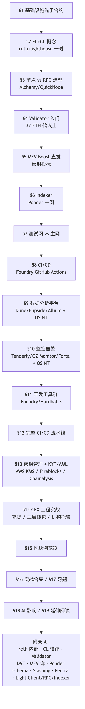
Chapter 02 TL;DR ：合约只占工程量 5%，剩下 95% 是节点 / RPC / indexer / 监控 / CI——这一模块讲的就是凌晨 3 点撑住协议的"95%"。
钩子 ：写完 ERC20 像装修完厨房——能开火做菜不等于能开餐厅，灯线水管燃气表才是凌晨被叫醒的根源。
类比 ：合约是产品，基础设施是供电供水。停电时再好的菜谱也没用。
想象你刚部署完一个 ERC20，forge create 返回了一个绿色对勾。然后呢？前端要查余额——得有个 RPC 端点；用户问 "我半年前那笔转账"——得有 indexer 把 Transfer 解码写进 Postgres；某天凌晨 admin key 被滥用 30 秒——得有告警把你从床上叫起来；调查时要看 trace——得有 archive 节点；修复要重新部署——得有 CI 跑完测试 + Safe 多签转 owner + Etherscan verify。写出那行 ERC20 大概是工作量的 5%，剩下 95% 是让它在凌晨 3 点也能撑住的基础设施。
这一模块的所有内容，都在解决这四种半夜叫醒人的失败模式：
失败模式
工程后果
对应章节
可用性
节点 lag / RPC throttle，用户看到旧余额
§2（节点）/ §3（RPC 选型）
可信性
单一 RPC 端点返回假 state
附录 I.1 Light Client
可观测性
攻击发生 30 秒后才 oncall 知道
§10（监控告警）
运维成本
archive 自建 ¥11000/年，云上 ¥17000+/年
§3.3（成本对照）
真实故事：2024 年某 30M TVL DeFi 项目，5 个 Solidity 工程师 0 个 SRE，开盘当天免费 RPC tier 高峰被 throttle 上百次/小时——前端 8 小时显示"余额 0"，社区以为合约被黑，TG 群 5000 人挤兑。教训：Solidity 工程师不是 SRE 的替代品。
本节速记
- 一句话：合约是 5%，基础设施是 95%。
- 一张图：失败模式四象限（可用性 / 可信性 / 可观测性 / 运维成本）。
- 一个动作：今天就给你的协议补一份 oncall runbook，明天再写合约。
Chapter 03 TL;DR ：合并后以太坊 = EL（执行层）+ CL（共识层）两个进程，缺一不可。reth + lighthouse 是 2026 年最流行的组合。reth 处理 EVM 执行 + state；lighthouse 处理 PoS 信标链 + attestation。
钩子 ：2026-04 某 1.7 Gigagas peak block，reth v2.0 用 400ms 完成 state root，geth OOM 退出。选错客户端 = 节点掉队。
类比 ：EL 是"会计"（管账本：state / receipt），CL 是"议长"（管投票：attestation / fork choice）。两人共用一把锁（JWT），各自有印章。会计不投票，议长不算账，但缺谁都散会。
2.1 EL/CL 职责切分
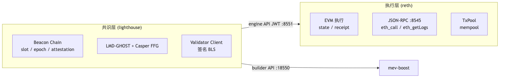
JWT 文件（jwt.hex）是 EL/CL 通信唯一凭证，务必 read-only 挂载。
2.2 节点类型速查
类型
存储
查询能力
2026-04 磁盘 (reth)
典型用途
Full 最近 ~128 块状态
latest 状态
700 GB
RPC / 前端
Archive 全历史状态 + trace
任意区块
2.5 TB
indexer / DeFi 分析
Light 仅 beacon header
merkle proof 校验
<1 GB
钱包 / 移动端
2.3 reth + lighthouse docker-compose（Sepolia，骨架）
services :
reth : # EL
image : ghcr.io/paradigmxyz/reth:v2.0.0
command : [ node , --chain=sepolia ,
--authrpc.jwtsecret=/jwt/jwt.hex , # 与 CL 共享
--http , --http.api=eth , net , web3 , txpool , debug , trace ]
volumes : [ ./jwt : /jwt : ro , reth-data : /data ]
lighthouse : # CL
image : sigp/lighthouse:v8.1.3
depends_on : [ reth ]
command : [ lighthouse , bn , --network=sepolia ,
--execution-endpoint=http : //reth : 8551 ,
--execution-jwt=/jwt/jwt.hex , # JWT 唯一信道
--checkpoint-sync-url=https : //checkpoint-sync.sepolia.ethpandaops.io ]
volumes : [ ./jwt : /jwt : ro , lh-data : /data ]
关键点：JWT 共享 → authrpc.port=8551 与 execution-endpoint 对应；http.api 不要开 admin；checkpoint-sync 把 CL 同步从天压到分钟。完整可复制版 （含端口/metrics/restart/volumes 全字段）见 code/01-node-bootstrap/docker-compose.yml
15 分钟上手 ：./setup.sh（生成 jwt）→ docker compose up -d → Sepolia EL ~28 min、CL ~4 min 同步完毕。
节点客户端内部架构详见 附录 A ；五种 CL 横评见 附录 B 。
本节速记
- 一句话：节点 = EL + CL 一对进程，JWT 是唯一信道。
- 一张图：EL/CL 职责切分。
- 一个动作：Sepolia 跑一次 docker compose up -d，看 8545 出块。
Chapter 04 TL;DR ：MVP 先用 Alchemy/QuickNode；流量稳定或有隐私/信任需求时自建 reth full；MEV searcher 必须自建。
钩子 ：2026-04-15 凌晨 2 点，某 80M TVL 借贷协议的清算机器人 6 分钟无响应——Alchemy 静默把 eth_getLogs 从 10 RPS 降到 2 RPS，返回 "block range too large" 而不是 429。8000 ETH 头寸滑向坏账。RPC 才是合约真正活的地方。
类比 ：托管 RPC 像合租公寓（便宜、有人管，但房东能看你的快递）；自建节点像自己买房（贵、自己修水管，但没人偷看）。
3.1 决策树
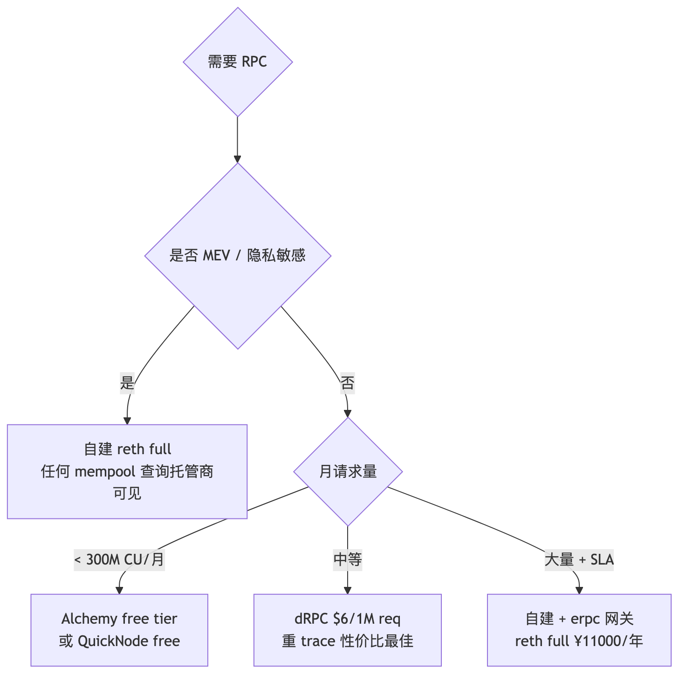
3.2 主流 RPC 提供商速查 (2026-04)
提供商
月度免费额度
优势
适合
Alchemy 300M CU
Enhanced API (NFT/transfer)
大多数 dApp
QuickNode 10M credit
SOC2 / ISO27001 全认证
企业 / 合规
dRPC 100k req (后 $6/1M)
flat 价，重 trace 最省
indexer 后端
Tenderly Gateway 25M
与 Alert/Devnet 联动
开发调试
LlamaRPC 完全免费
DefiLlama 聚合多 RPC
个人 / 测试
3.3 成本对照（年度）
方案
一年总费
适合
自建 reth full + colo
¥11000
长期 / 隐私 / archive 不限次
Alchemy Growth
¥17400
早期 / MVP
Alchemy Scale
¥86000
中等流量 dApp
AWS i4i.2xlarge
¥42000
全云上
自建额外优势：数据可信、无 rate limit、archive/trace 不限次、隐私（托管商能看到所有查询地址）。
3.4 erpc 网关（多 upstream 聚合）
erpc 自带 health check + circuit breaker（lag > 30 块自动剔除）。eth_call cache 30s 可挡 ~80% 请求。
同步策略（snap sync / checkpoint sync 必开）详见原 §6；自建调优清单见原 §7.5。
本节速记
- 一句话：MVP 用托管，规模化用网关聚合，敏感场景必自建。
- 一张图：决策树（MEV / 流量 / SLA）。
- 一个动作：用 erpc 加一层 cache + failover，单点托管立刻变三冗余。
Chapter 05 TL;DR ：质押 32 ETH → 获得 validator 身份 → 每个 slot 投票（attestation）→ 偶尔被选中提议区块（proposal）→ 获得 ~3-4% APR。
钩子 ：Validator = 押金 32 ETH 的代议士。投票投错（attestation）扣几 gwei；蓄意双投（同一 slot 签两份不同票）Pectra (EIP-7251) 后初始 slashing penalty 从 1/32 effective balance 降到 1/4096（~0.0078 ETH，前提 32 ETH validator）；correlation penalty 视同时被 slash 数量叠加，最坏情况趋近全额。2024 年某 staking 服务商机房迁移，工程师把 keystore scp 到新机器后忘了关老 VC，9 个 validator 触发 double-sign，单次损失 ~16 ETH/个，共赔 144 ETH （当时约 $50 万）。
4.1 入门流程（直觉版）
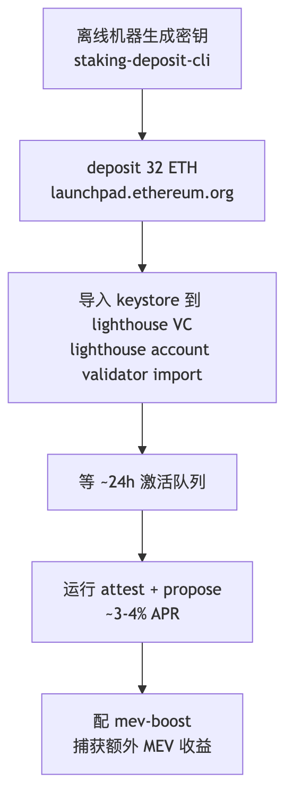
4.2 关键命令（快速参考）
# 1. 离线机器生成密钥
./deposit.sh new-mnemonic \
--num_validators 1 \
--chain mainnet \
--eth1_withdrawal_address 0xYOUR_SAFE_MULTISIG
# 2. 导入 keystore + 启动 VC
lighthouse account validator import \
--network mainnet --directory validator_keys
lighthouse vc \
--network mainnet \
--beacon-nodes http://lighthouse-bn:5052 \
--suggested-fee-recipient 0xYOUR_FEE_RECIPIENT \
--enable-doppelganger-protection \ # 防双签！
--builder-proposals
4.3 Slashing 防御三板斧
防御
工具
关键点
slashing DB 单一来源
lighthouse VC
① 不要把 keystore（私钥文件）复制到第二台机器同时运行；② slashing protection DB（EIP-3076 JSON）须随 keystore 迁移，它记录已签范围防止双签
doppelganger 检测
--enable-doppelganger-protection启动时延迟 2 epoch 检测网络上是否同 pubkey 在线
迁移时导出 EIP-3076
prysmctl / lighthouse slashing-protection切换客户端必须导出导入 slashing DB
0x01/0x02 升级完整操作、key 管理、DVT 拆分详见 附录 C / 附录 D 。
本节速记
- 一句话：validator 是押 32 ETH 的代议士，双签代价比误投票大百倍。
- 一张图：staking 流程五步图（生成 → deposit → 导入 → 激活 → 出 attest/propose）。
- 一个动作：导入 keystore 前先 --enable-doppelganger-protection，宁慢 2 epoch 不被 slash。
Chapter 06 TL;DR ：mev-boost 让 validator 接入第三方 builder 提供的高 MEV 区块，validator 不需要自己搜索 MEV，只需接收出价最高的 block header 并签名。
钩子 ：MEV bundle = 密封投标。Builder（快递员）打包一批交易出价给 validator（拍卖师）；validator 只看到密封的出价金额（blinded header），签名后 relay 才揭示具体 tx 列表（reveal）。一旦签了就必须广播区块，否则视为 missed proposal 仅损失 proposer reward；不触发 inactivity leak（leak 仅在 finality 停滞时启动），不构成 slashable offense （slashing 仅针对双签或 surround vote）。
5.1 PBS 架构（四个角色）
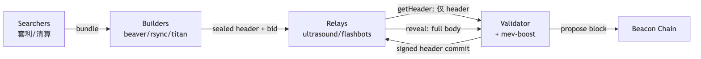
为什么需要 relay ：validator 先看完 tx 再签 = 能挑好的拒签差的 = builder 被骗；relay 当公证人确保 commit-reveal 公平。
5.2 mev-boost 配置（复制即用）
mev-boost \
-mainnet \
-relay-check \
-relays https://0xac6e77dfe25ecd6110b8e780608cce0dab71fdd5ebea22a16c0205200f2f8e2e3ad3b71d3499c54ad14d6c21b41a37ae@boost-relay.flashbots.net,\
https://0xa1559ace749633b997cb3fdacffb890aeebdb0f5a3b6aaa7eeeaf1a38af0a8fe88b9e4b1f61f236d2e64d95733327a62@relay.ultrasound.money,\
https://0xa15b52576bcbf1072f4a011c0f99f9fb6c66f3e1ff321f11f461d15e31b1cb359caa092c71bbded0bae5b5ea401aab7e@aestus.live \
-addr 127 .0.0.1:18550
# lighthouse 加上
lighthouse bn ... --builder http://127.0.0.1:18550 \
--builder-fallback-skips= 3
至少配 4-5 个 non-censoring relay （ultrasound / titan / aestus / flashbots / bloXroute max-profit）。bloXroute regulated 仅在合规要求下添加。
Relay 市占、Builder market、SUAVE、BuilderNet 详见 附录 E 。
本节速记
- 一句话：MEV-Boost = 密封投标，relay 是公证人。
- 一张图：searcher → builder → relay → validator → chain 五角链。
- 一个动作：跑一份 mev-boost，配 4 个 non-censoring relay，多收 30-100% MEV。
Chapter 07 TL;DR ：indexer = 监听 logs → 解码 → 写 Postgres → 暴露 GraphQL。把"链上即时计算"变成"数据库查询"，前端 50ms 返回而不是等 10 秒 eth_getLogs。
钩子 ：产品问"首页展示用户最近 30 天所有 swap"，工程师写 eth_getLogs(fromBlock=head-216000) 然后等——15 秒后 RPC 报 "block range too large"。用户不会等，这就是 indexer 存在的理由。
类比 ：链是一本越写越厚的流水账，indexer 是给账本做"按用户/按日期"的索引卡——查"张三 3 月所有支出"翻索引而不是翻账。
6.1 选型速查
方案
适合
速度 (Uniswap V2 bench)
Ponder TS 团队 / 自托管 / 类型安全
~4 min（自建 reth archive）
Envio HyperIndex 极端高吞吐
~1 min（HyperSync）
Goldsky 需要 webhook / 流到 BigQuery
~10 min
The Graph 抗审查 / 老 subgraph 迁移
~158 min
6.2 Ponder 最小可跑示例（USDC Transfer 索引）
# 1. 初始化项目
pnpm create ponder@latest my-indexer
cd my-indexer && cp .env.example .env # 填 PONDER_RPC_URL_1
docker compose up -d # 起 Postgres
pnpm dev # 打开 http://localhost:42069/graphql
ponder.config.ts 关键字段：
export default createConfig ({
database : { kind : "postgres" , connectionString : process.env.DATABASE_URL },
networks : { mainnet : { chainId : 1 , transport : http ( process . env . PONDER_RPC_URL_1 ) } },
contracts : {
USDC : {
network : "mainnet" ,
abi : erc20Abi ,
address : "0xA0b86991c6218b36c1d19D4a2e9Eb0cE3606eB48" ,
startBlock : 22300000 , // 不要从 0 开始！全量回填要数小时
},
},
});
src/index.ts handler（Ponder 0.11+ Drizzle ORM）：
ponder . on ( "USDC:Transfer" , async ({ event , context }) => {
const { from , to , value } = event . args ;
await context . db . transferEvent . insert ({ from , to , value , blockNumber : event.block.number });
if ( from !== ZERO_ADDRESS ) {
await context . db . account
. insert ({ address : from , balance : - value , transferCount : 1 })
. onConflictDoUpdate ( row => ({
balance : row.balance - value ,
transferCount : row.transferCount + 1 ,
}));
}
});
6.3 reorg 处理
Ponder 自动 rollback head ~5 块以内的 reorg，不需要你操心。自己写 indexer 时必须存 block_hash，每块检查 parent_hash 是否仍指向已写块。
6.4 生产部署要点
Postgres 用托管（RDS / Neon / Supabase），不要自建（备份/PITR 麻烦）
Ponder 把 cursor 写在 _ponder_status，重启自动续上
必须配 PITR：Postgres 损坏则从 startBlock 重跑
Ponder schema 完整示例（含 relations / primaryKey / index）见 附录 F 。
本节速记
- 一句话：indexer 把"链上即时算"变成"数据库 join"。
- 一张图：logs → 解码 → Postgres → GraphQL 四级流水线。
- 一个动作：pnpm create ponder@latest 跑一个 USDC Transfer 索引，30 分钟见 GraphQL。
Chapter 08 TL;DR ：Sepolia = 主要开发测试网；Holesky = validator / staking 测试；mainnet fork（anvil / Tenderly Devnet）= 集成测试；主网 = 只有 CI 全绿 + tag push 才部署。
钩子 ：2024 年某项目主网首次部署直接 forge script --broadcast，constructor 写错一个常量——8 万美元 gas 烧光，合约不可升级，下次发版换了个地址。anvil --fork-url 跑一次就能拦下。
类比 ：测试网像驾校的练车场，mainnet fork 像在真实路况下用模拟方向盘——出错只磕碰道具，不撞真车。
7.1 三种环境对比
环境
用途
RPC
Sepolia 合约开发测试、indexer 功能验证
ethpandaops checkpoint + Alchemy Sepolia
Holesky Validator / staking 测试（32 hoETH 免费水龙头）
checkpoint-sync.holesky.ethpandaops.io
mainnet fork（anvil） 集成测试 / 模拟真实 state
anvil --fork-url $MAINNET_RPC --fork-block-number 22000000
Tenderly Devnet 团队共享 fork、reviewer 复现 PR
控制台一键创建，URL 共享
mainnet 生产部署
自建 reth + erpc 网关
7.2 工作流节奏
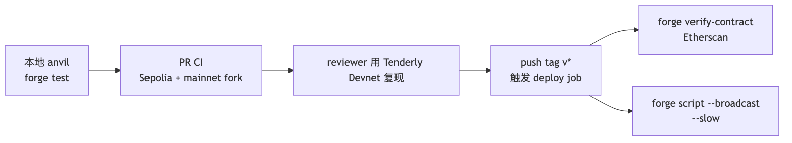
关键规则 ：
- startBlock 在测试网用近期区块，不从 0 跑
- mainnet deploy job 仅 v* tag 触发，不跟 PR push
- deploy 前必须 forge build --sizes 检查 24KB / 49152B initcode 限制
7.3 常用测试网命令
# Sepolia 水龙头
open https://sepoliafaucet.com
# Holesky validator 水龙头（32 hoETH）
open https://holesky-faucet.pk910.de
# mainnet fork（anvil）
anvil --fork-url $MAINNET_RPC_URL \
--fork-block-number 22000000 \
--chain-id 1
# 模拟账户余额（测试用）
cast rpc anvil_setBalance 0xYOUR_ADDR 0x1000000000000000000
本节速记
- 一句话：Sepolia / Holesky / fork 三件套，主网仅 tag 才发车。
- 一张图：本地 anvil → PR CI → Tenderly Devnet → tag → 主网部署流水。
- 一个动作：把 mainnet 部署 job 限到 on.push.tags: ['v*']，斩断手滑事故。
Chapter 09 TL;DR ：PR 跑 forge fmt + test + coverage + Slither；release tag 才跑 invariant heavy fuzz + Halmos + deploy。30 秒 PR CI vs 1 小时 release CI，用时间换安全。
钩子 ：2024 年 Curve 重大 bug，reentrancy 在 invariant test 里能找出来——但 PR CI 配的 FOUNDRY_INVARIANT_RUNS=256 太少没跑到那条路径，merge 上线两周后被白帽报告。CI 不是装饰，是合约最后一道筛。
类比 ：PR CI 是日常体检（30 秒抽血），release CI 是大体检（1 小时核磁）——天天大体检没人干活，从不大体检迟早出大病。
8.1 流水线全景
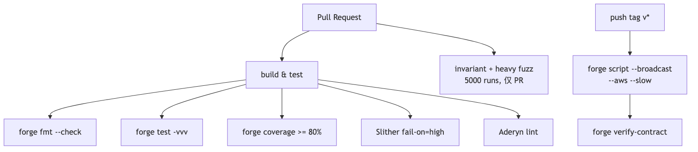
8.2 CI 模板（简版骨架）
# .github/workflows/ci.yml
name : One-shot CI
on :
push : { branches : [ main ] }
pull_request : { branches : [ main ] }
concurrency : { group : ci-$ {{ github.ref }}, cancel-in-progress : true }
env : { FOUNDRY_PROFILE : ci }
jobs :
build-test : # PR 30s 快道
runs-on : ubuntu-latest
steps :
- uses : actions/checkout@v4
with : { submodules : recursive }
- uses : foundry-rs/foundry-toolchain@v1
- uses : actions/cache@v4 # 缓存 ~/.foundry + lib + out
with : { path : "~/.foundry\n./lib\n./out" ,
key : foundry-$ {{ hashFiles('foundry.toml' , 'lib/**' ) }} }
- run : forge fmt --check && forge build --sizes && forge test -vvv
- run : forge coverage --report lcov # 配 lcov action 卡 80%
slither : # 静态分析
needs : build-test
steps :
- uses : crytic/slither-action@v0.4.0
with : { fail-on : high , ignore-compile : true }
invariant : # PR 慢道 45min
needs : build-test
if : github.event_name == 'pull_request'
env : { FOUNDRY_INVARIANT_RUNS : "5000" , FOUNDRY_FUZZ_RUNS : "10000" }
steps :
- run : forge test --match-test invariant -vvv
deploy : # 仅 v* tag，KMS OIDC
if : startsWith(github.ref, 'refs/tags/v')
permissions : { id-token : write , contents : read }
steps :
- uses : aws-actions/configure-aws-credentials@v4
with : { role-to-assume : arn : aws : iam :: ... : role/eth-deploy-role }
- run : forge script script/Deploy.s.sol --rpc-url $RPC_URL
--aws --broadcast --verify --slow # --slow 防 nonce 错乱
完整 CI 模板 （含 Aderyn + Halmos + Tenderly Virtual TestNet + 多链矩阵，~270 行）见 code/ci/foundry-full.yml
8.3 关键设计点
FOUNDRY_PROFILE: ci：切 [profile.ci]，fuzz/invariant 跑更多 runssubmodules: recursive：forge install 用 git submodule，缺此行依赖会丢forge build --sizes：24KB runtime + 49152B initcode 限制，临近提前预警--slow：等 receipt 才发下一笔，防 nonce 错乱deploy 用 AWS KMS OIDC（id-token: write），GitHub secrets 里无长期 AWS 凭证
本节速记
- 一句话：PR 30 秒筛常规 bug，release 1 小时筛 deep bug，KMS 守住部署私钥。
- 一张图：PR/release 双速 CI 流水线。
- 一个动作：把 FOUNDRY_INVARIANT_RUNS 调到 5000、deploy 限 v* tag。
主线前八节走完，你已经能跑节点 + indexer + CI 这条最小闭环。但"能跑"和"跑得稳"中间还隔着分析、监控、密钥、流水线——下一节 §9 起把这条链路工程化，从看数据开始。
Light Client / 同步策略 / RPC 横评 / Indexer 全谱系 等深度参考已挪到模块末尾的 附录 I ，主线在此直接进入 §9。
Chapter 10 TL;DR ：indexer（§6）服务 dApp 后端实时；分析平台（Dune / Flipside / Allium）服务数据团队、PM、投资人离线 SQL——同一份链上数据两种消费姿势。
钩子 ：打开 hildobby Dune dashboard 看 33M ETH staked 实时分布，80 行 SQL 跑出来。第一次摸 Dune 像第一次摸 Postgres——"全网数据 + 一行 SQL"。
类比 ：indexer 是协议自己的"小账房"，分析平台是"国家统计局"——任何人都能查、查跨协议、查历史。
§8 的 indexer 是给 dApp 后端用的（实时、GraphQL、单合约）；分析平台是给数据科学家、产品经理、投资人用的（离线、SQL、Notebook、多协议）。同一份 archive 数据，两种消费方式，下面把九个主流平台用一张表讲完什么时候用谁。
9.1 主流分析平台
平台
数据源
查询方式
免费额度
强项
Dune 多链 archive 抽取
SQL (DuneSQL = Trino)
dashboard 公开免费, query 限速
社区生态最大, dashboard 文化
Flipside 多链 archive 抽取
SQL (Snowflake)
免费, 社区活跃
链覆盖广, 教育资源好
Allium 企业级 archive ETL
SQL + API
enterprise (无免费 tier)
data quality 最高, 用于机构
Footprint Analytics 多链 + 链下
SQL + no-code
免费 dashboard
DeFi/GameFi 模板多, 中文友好
Token Terminal 协议级 PnL/收入
API + dashboard
免费 read
财务级 metric, IR 投资人友好
DefiLlama 公开 / 抓取
API + dashboard
完全免费
TVL / yields / fees, 协议级标准
Artemis 跨链
dashboard
部分免费
跨链对比, infra metric
Nansen 多链 + 标签
dashboard + Smart Money 追踪
付费 ($150-1500/月)
链上地址标签库最大
Arkham 多链 + 实体识别
dashboard + Intelligence
部分免费
实体识别 (谁是谁), 套利追踪
9.2 选型
社区 dashboard: Dune
开发者取数: DefiLlama API + Dune SQL
投资人 / VC: Token Terminal + Artemis + Nansen
机构 / 合规: Allium + Arkham
DeFi 协议运营: Dune + DefiLlama + Footprint
9.3 DuneSQL (Trino) 关键扩展
-- 1. 直接读 raw block / tx / logs / traces 表
SELECT block_number , "from" , "to" , value
FROM ethereum . transactions
WHERE block_time >= now () - interval '1' day
LIMIT 10 ;
-- 2. Solidity 解码: decoded.event_inputs.<param>
SELECT
evt_block_time ,
evt_tx_hash ,
varbinary_to_uint256 ( value ) AS amount -- 自动解 uint256
FROM erc20_ethereum . evt_Transfer
WHERE contract_address = 0 xa0b86991c6218b36c1d19d4a2e9eb0ce3606eb48 -- USDC
AND evt_block_time >= now () - interval '1' hour ;
-- 3. Trino window 函数: rolling 24h volume
SELECT
date_trunc ( 'hour' , evt_block_time ) AS hr ,
sum ( varbinary_to_uint256 ( amount0In ) + varbinary_to_uint256 ( amount0Out )) OVER (
ORDER BY date_trunc ( 'hour' , evt_block_time )
ROWS BETWEEN 23 PRECEDING AND CURRENT ROW
) AS rolling_24h_vol
FROM uniswap_v2_ethereum . Pair_evt_Swap
ORDER BY hr DESC ;
-- 4. EVM 专用: keccak / abi_decode
SELECT keccak ( 0 x123456 ) AS hash ;
SELECT abi_decode ( input , '(address,uint256)' ) FROM ethereum . transactions LIMIT 1 ;
性能优化 (列扫描, 非 indexed)
反模式
优化
WHERE LOWER(from) = ...用 from = 0x... (binary 比较, varbinary 类型)
WHERE block_time::date = '2025-01-01'用 block_time >= TIMESTAMP '2025-01-01' AND <
SELECT * FROM ethereum.transactions 然后 filter用 partition block_number 过滤
多表 JOIN 不带 partition
先 WHERE block_number BETWEEN ... 再 JOIN
Dune Echo API (multichain 实时数据)
# 拿地址的 token holdings
curl https://api.echo.xyz/v1/balances/evm/0xVITALIK \
-H "X-Dune-Api-Key: $KEY "
# 拿 mempool 中地址相关 pending tx
curl https://api.echo.xyz/v1/transactions/evm/pending/0xVITALIK \
-H "X-Dune-Api-Key: $KEY "
来源: Dune Echo API , Dune chain coverage
维度
Dune
Allium
Footprint
主用户
社区 / dashboard 文化
机构 / 合规
DeFi/GameFi 中文团队
数据延迟
1-3 min
< 1 min (real-time tier)
5-15 min
链覆盖
100+ EVM + Solana + Bitcoin + ...
130+ EVM
30+
数据质量 SLA
社区 best-effort
enterprise SLA
中等
Schema
community-curated (有 abstraction layer)
enterprise-curated
mixed
API 价格
$200-2000/月
$5k-50k/月
$50-500/月
no-code dashboard
✓ 强
✓
✓ 强
适合
open dashboard / 个人分析
银行 / 交易所 / TradFi
做 GameFi/Asia 项目
Allium 在 reorg 处理上更严谨, 适合给监管报数。Dune 适合产品 & marketing。
9.5 自建 Dune dashboard 全流程（OSINT 入门）
前面四小节给的是"平台横评"——这里给一条具体的、能在 30 分钟内端到端跑通的工作流。Dune 的 OSINT 价值在于：任何人都能 fork 别人的 query / dashboard、改 SQL、再 publish 出来 ——是链上数据领域最像 GitHub 的协作平面。
工作流四步
discover ：搜索已有 query / dashboard（如 @hildobby/staking、@21co 系列），优先 fork 高 star 的；fork ：右上角 "Fork query"——你拿到一份可改的 SQL 副本，参数可暴露成 {{var}}；改 SQL ：常用三张大表见下；publish + iframe ：每个 query 都有一个 https://dune.com/embeds/<id>/<vis> 链接，直接嵌入 README、Notion、内部门户。
Dune SQL 关键大表（DuneSQL / Trino 方言）
表
用途
关键列
ethereum.transactions全链 tx
hash, from, to, value, gas_used, block_time, success
ethereum.logs全链 event log
address, topic0, topic1..3, data, block_time, tx_hash
ethereum.tracesinternal tx
from, to, value, call_type, error, tx_hash
prices.usd历史 USD 价（多链 token）
contract_address, blockchain, price, minute
tokens.erc20ERC20 元数据
contract_address, symbol, decimals
dune.<wizard>.result_<id>引用别人的 query 结果
任意
Solana / Bitcoin / Cosmos 链对应 solana.transactions、bitcoin.transactions、cosmos.<chain>.txs。
模板 query 1：大额 USDC 转账（>$1M 阈值）
-- 过滤夜间噪声：只看 Transfer event value > $1M 的转账
SELECT
block_time ,
"from" AS sender ,
"to" AS recipient ,
value / 1 e6 AS usdc_amount ,
tx_hash
FROM erc20_ethereum . evt_Transfer
WHERE contract_address = 0 xA0b86991c6218b36c1d19D4a2e9Eb0cE3606eB48 -- USDC
AND value > 1000000 * 1 e6 -- $1M
AND evt_block_time > now () - interval '24' hour
ORDER BY block_time DESC
LIMIT 200
模板 query 2：CEX 钱包归集（识别热钱包）
-- 把 24h 内向 Binance hot wallet 转账 > $100k 的地址列出来
SELECT
"from" AS depositor ,
SUM ( value ) / 1 e6 AS total_usdc ,
COUNT ( * ) AS tx_count ,
MIN ( evt_block_time ) AS first_seen
FROM erc20_ethereum . evt_Transfer
WHERE contract_address = 0 xA0b86991c6218b36c1d19D4a2e9Eb0cE3606eB48
AND "to" IN (
0 x28C6c06298d514Db089934071355E5743bf21d60 , -- Binance 14
0 x21a31Ee1afC51d94C2eFcCAa2092aD1028285549 , -- Binance 15
0 xDFd5293D8e347dFe59E90eFd55b2956a1343963d -- Binance 16
)
AND evt_block_time > now () - interval '24' hour
GROUP BY 1
HAVING SUM ( value ) / 1 e6 > 100000
ORDER BY total_usdc DESC
模板 query 3：ETH 质押率（生态指标）
-- beacon chain 总质押 ETH ÷ 总供应
WITH staked AS (
SELECT SUM ( amount ) / 1 e9 AS eth_staked
FROM ethereum . beacon_deposits
)
SELECT
eth_staked ,
eth_staked / 120000000 . 0 AS staking_ratio
FROM staked
嵌入与推送
iframe ：<iframe src="https://dune.com/embeds/123456/789012" width="100%" height="400"></iframe> 直接贴 README；Telegram bot webhook ：Dune Pro 支持 query 调度（每 5 min/1 h），结果 POST 到 webhook，配 Bot Father 创建机器人转发；API 拉取 ：免费 tier 1000 calls/月，GET /api/v1/query/{id}/results 给后端定时任务。
OSINT 进阶（Arkham 实体追踪 / Whale Alert / 追资金剧本）见 §10.6。
本节速记
- 一句话：Dune 学社区、DefiLlama 学指标、Allium 给合规。
- 一张图：discover → fork → SQL → publish → 推送 五步 OSINT 流程。
- 一个动作：fork 一份 @hildobby/staking 改成自家协议指标，iframe 嵌到 README。
Chapter 11 TL;DR ：监控分两层——节点存活（Prometheus，§7.6）+ 合约行为（本节）。中等 TVL 用 Tenderly + Forta；100M+ TVL 必加 Phalcon Block 或 Hypernative 做 mempool 拦截；Defender Sentinel 2026-07-01 关停，迁开源 oz-monitor。
钩子 ：2024-07-30 凌晨某 cross-chain bridge 协议被盗 23M 美元——admin key 改 owner 47 秒就转走资金。team 装了 Etherscan watch list，但邮件 7 分钟后才发——资金已进 Tornado Cash。没有秒级告警 + 自动化响应，oncall 工程师赶不上链速。
类比 ：Tenderly = 警报器（响后你跑去看），Phalcon Block / Hypernative = 防火门（mempool 阶段直接拦截，链上根本看不到坏 tx）。
监控有两层职责：(1) 节点/服务自身存活 （Prometheus + Alertmanager，已在 §7.6.2 metrics 阈值表覆盖）；(2) 合约/on-chain 行为监控 （攻击、admin 异常、清算飙升）。本节专讲第二层。一个让 2026 监控选型彻底洗牌的关键事件——OpenZeppelin Defender Sentinel 2026-07-01 关停 ，所有跑 Defender 的存量项目都要迁，下面给你三条迁移路径。
10.1 工具定位
工具
类型
控制粒度
触发后能做什么
适用场景
2026-04 状态
Tenderly Alert
SaaS
function/event/failed-tx, 参数比较
webhook/Slack/PagerDuty/邮件/Web3 Action
自家协议监控 + debug 联动
活跃, 主推 AI debug
OpenZeppelin Defender Sentinel
SaaS
function/event/参数
邮件/Slack/Telegram/Discord/Autotask
合约 admin / 治理 / 紧急 pause
2026-07-01 关停 , 迁开源 Monitor / Relayer
Forta agent
链上 + bot 网络
任意 TS/Python
Finding -> Forta query API / Discord webhook
全网监控 / 社区 bot 协同
活跃
Hypernative
SaaS
AI-driven 异常检测
webhook / 自动 freeze
高 TVL 协议 / 桥
商业, 2026 主推
Ironblocks
SaaS
rule + ML
webhook / on-chain firewall
DeFi 协议 firewall
活跃
Cyfrin Wallet Watch
SaaS
钱包级行为
邮件
个人 / 小团队
2025 上线
来源: OpenZeppelin Defender shutdown , Tenderly Alerts docs , Forta SDK
10.2 Defender 关停的迁移路径
开源替代：openzeppelin-relayer / openzeppelin-monitor （alpha）。Sentinel + Autotask → 自托管 Monitor + Relayer。新项目直接选 Tenderly + Forta，高 TVL 加 Hypernative。
openzeppelin-monitor 自托管（骨架）
# docker-compose.yml：monitor + redis 两进程
services :
oz-monitor :
image : ghcr.io/openzeppelin/openzeppelin-monitor:latest
volumes : [ ./config : /app/config : ro ]
depends_on : [ redis ] # redis 存 dedupe 状态
redis : { image : redis : 7-alpine }
# config/monitors/erc20-pause.yaml：一条规则示例
name : USDC large-withdraw -> Slack
addresses : [ "0xA0b8...eB48" ]
match_conditions :
events :
- signature : "Transfer(address,address,uint256)"
expression : "value > 1000000000000" # 1M USDC
notifications :
- { kind : slack , webhook : $ { SLACK_WEBHOOK } }
- { kind : webhook , url : https : //pause-bot/pause } # 转给独立签名服务
完整 yaml（含 RUST_LOG / metrics / redis volume / 多 monitor 规则）见 openzeppelin-monitor README 。铁律 ：monitor 只 detect + dispatch，pause 私钥放独立 relayer（避免单点失败）。
10.3 Tenderly Alert 实战
见 code/04-tenderly-alert/tenderly.yaml. 典型 alert: 函数参数阈值 (withdraw > 1M USDC) / OwnershipTransferred 触发 PagerDuty / 30 笔失败 tx/10 min 同一 EOA 探测 bot.
Tenderly 差异化: debug 联动 (alert -> 一键 trace + state diff) / AI calldata 解码 (raw 0xa9059cbb... -> "transfer 100 USDC to 0xabc") / Virtual TestNet (克隆生产 state 做模拟).
Tenderly Virtual TestNet
维度
anvil --fork
Tenderly Virtual TestNet
启动时间
1-3 s (本机)
100 ms (托管, 全球分布)
共享
否
URL 共享给团队, 大家连同一个 fork
持久化
进程退出即没
持续运行, 状态保留
explorer
无 (要自己 forge inspect)
自带 explorer, 同 Etherscan UI
trace
forge -vvv
完整 step-by-step UI debugger
CI 集成
否
Tenderly/vnet-github-action
工作流: PR CI -> spin up vnet -> 集成测试 -> 把 explorer URL 贴 PR -> reviewer 复现 -> approve -> CI 销毁. CLI 实操:
# 用 tenderly CLI 创建 vnet
tenderly devnet spawn-rpc --project my-project --template fork-mainnet
# 输出 RPC URL: https://virtual.mainnet.rpc.tenderly.co/<UUID>
# 直接当 RPC 用
forge test --fork-url $TENDERLY_VNET_URL -vv
# 模拟 whale impersonation
cast rpc tenderly_setBalance 0xVITALIK 0x1000000000000000000 --rpc-url $TENDERLY_VNET_URL
cast rpc tenderly_addBalance 0xVITALIK 0x1000000000000000000 --rpc-url $TENDERLY_VNET_URL # 注：vNet 端点已替换为 tenderly_setBalance；fork 端点保留 addBalance
Tenderly 三大产品线
产品
用途
是否在 free tier
Debugger 任意 mainnet tx 的 step-by-step opcode 级 trace, 状态 diff
✓
Simulator 给一笔未发出的 tx 预演结果 (state changes, gas, events)
✓ (有限次)
Virtual TestNet 持续 fork 任意链, 团队协作
free tier 5 个并发, 7 天 TTL
Web3 Actions 链上事件触发的 serverless TS 函数 (256 MB / 60 s)
部分免费
Alerts function/event/参数 监控 + 多渠道分发
✓
Gateway 托管 RPC, 与 Alerts/Debugger 深度联动
免费 25M req/月
来源: Tenderly Virtual TestNet docs , vnet-github-action , Tenderly Review 2026
Phalcon (BlockSec) vs Hypernative vs Tenderly 实测对比
维度
Tenderly
Phalcon (BlockSec)
Hypernative
检测点
tx 上链后 (post-mine)
mempool 阶段 (pre-mine)mempool + post-mine
反应时间
5-15 s
< 1 s (链上前拦截)
< 1 s
自动 block
否 (只 alert)
是 (Phalcon Block 自动反向竞拍 / 拦截)是 (firewall + 反向交易)
误报率
高 (只看模板)
BlockSec 报告：误报率 < 1%（非命中率 99%）
< 1% (ML 模型)
适合
自家协议监控 + debug 联动
DeFi 协议主动防御 / 应急响应
高 TVL 协议 / DEX / lending
月费
$200-2000
enterprise
enterprise ($5k-50k)
来源: BlockSec Phalcon Security , Phalcon Block Defense , Hypernative State of Web3 Security 2026
中等 TVL 协议 (10M-100M) 选 Tenderly + Forta 已够；100M+ 协议必上 Phalcon Block 或 Hypernative, 不能只有事后 alert。这是 2024-2025 主流 DeFi 协议血泪教训得出的标准。
Pessimistic.io
Pessimistic 是另一家 audit firm 衍生的监控服务, 专做 invariant on-chain monitoring (协议方提供 invariant 表达式, 它在每块校验). 适合数学严格的 DeFi 协议, 但仍需要协议方写出 invariant.
10.4 Forta agent 实战
见 exercises/02-forta-large-transfer-agent/src/agent.ts. agent = Docker image, 抵押 FORT 注册到网络. txEvent.filterLog(ABI, address) 过滤事件; Finding 含 alertId / severity / metadata / labels; 多链复用: chainIds [1, 8453, 42161, 10].
10.5 选型决策树
10.6 OSINT 全网监听
§10.1-§10.5 偏"自家协议防御"——配置 alert 监控自己合约 的异常调用。但在攻防实战里，工程师更需要全网监听 ：别家协议被打的 5 分钟内能否同步发现？某个聪明钱地址刚刚动了仓？某交易所储备金正在异常下降？这一节给三条可立即起跑的免费/平价线，外加一份"追资金完整剧本"。
三条免费 OSINT 线（零代码起步）
工具
类型
你能拿到什么
价格
起跑速度
Forta 公共 bot 网络 链上 bot 网络
异常 tx / suspicious contract / phishing 的 finding 流
免费查询
5 min
Whale Alert webhook + Twitter
链上 > $1M 转账的实时推送
免费 Twitter / $$$ webhook
1 min
Arkham Alert 实体级 alert
某个 entity（个人/机构/CEX）的资金异动
免费基础 / $$ 高级
3 min
集成示例 ：Forta + Telegram bot —— 订阅 Forta GraphQL alerts(severity: HIGH, chainIds: [1])，把 finding 转发到 Telegram 群，5 分钟搭好"全网攻击早报"。Whale Alert webhook 直接 POST JSON 到 Slack，关键字段 amount_usd / from.owner / to.owner / blockchain。
Etherscan 工程化用法（常被忽略的细节）
Etherscan 不只是"查 tx"——它有四个工程化 功能：
Public Name Tag ：地址的全网公认标签（如 Binance 14、Tornado.Cash Router）。批量查询时 join 上 name tag 等于免费的"实体识别层"。Private Notes ：登录后给任意地址写私有备注，自动出现在自己看的所有 tx 页面——做调查时给"嫌疑地址"做笔记。Watch List ：收藏一组地址，邮件 / push 推送 in/out tx。免费 tier 限 30 个地址，够个人 oncall 用。Token Approvals 视图 （对照 revoke.cash ）：列出地址当前所有 ERC20/721 approvals，撤销面板。这是钓鱼防御 #1 工具。
Arkham Intelligence 实体追踪
Arkham 把地址 抽象成实体 （Entity，如 "Justin Sun"、"Three Arrows Capital"、"FTX bankruptcy estate"）——背后是一套人工 + ML 标注的图谱。
功能
用途
免费/付费
Entity 页 看某实体的所有钱包、净值、近期动作
免费
Visualizer 资金流向图（节点 = 地址，边 = tx），交互式追溯
免费
Alert 实体级 alert（如 "Justin Sun 任一钱包 deposit > $5M 到 CEX"）
免费基础
Ultra （赏金市场）公开悬赏 "把 X 地址的 owner 标出来"，社区竞标
付费
实体追踪典型用法：调查 SAFE 钱包时把所有 signers 拖到 Visualizer，发现其中两个 signer 共同给 Tornado Cash 做过 deposit——这是复合身份 信号，给安全团队多一条线索。
追资金完整剧本（4 步）
收到"协议被盗"告警后，资金溯源标准流程：
黑客地址 → exploit tx ：从 Tenderly / Etherscan 看 root tx，找到 attacker EOA。资金分支映射 ：Arkham Visualizer 输入 attacker，按 hop 展开，标注每条分支的"目的地类型"（CEX / mixer / bridge / 长期持有）。跨链追踪 ：如果走 bridge（LayerZero / Axelar / Across），跨链 source tx → dest tx 的关联通过 messageHash / nonce；Allium 的 bridge.transfers 表直接给映射。CEX 入金锁定 ：如果分支落到 CEX hot wallet，截图 + 时间戳 + 金额，发邮件给 CEX 安全团队（Binance/Coinbase 都有 abuse@）申请冻结。具体取证方法交叉参考 模块 05 §1.4 反追踪剧本 。
五大 mixer / privacy 工具（Tornado Cash / Railgun / Aztec / Privacy Pools / FixedFloat）追踪难度依次递减，详见模块 05。
应用三件套（OSINT 商业化）
DeFi 攻击溯源 ：Forta + Arkham 组合，自动化产出"被打协议 + 黑客资金路径"——这是 SecOps / DAO Treasury 团队的日常需求。巨鲸 / 聪明钱跟单 ：Arkham Entity Alert + Nansen Smart Money（付费）+ Whale Alert，组合成"top 100 trader 跟单信号源"——Crypto Twitter 上很多账号靠这个流量起家。交易所 PoR + 负债侧攻击面 ：交叉参考 模块 08 零知识证明 §场景 5 PoR ——Etherscan/Arkham 看 CEX 储备地址，Dune query 看 24h 净流入流出，配合 PoR Merkle proof，能在 CEX "半夜偷偷搬家"前 2-6 小时提前警报（FTX 倒闭前几天链上数据已发出信号）。
Arkham vs Nansen：Arkham 偏"实体识别 + 资金流向图"，UI 友好免费多；Nansen 偏"标签 + 聪明钱信号"，订阅 $150-1500/月。两者搭配是机构 OSINT 标配。
本节速记
- 一句话：事后 alert 抢不过链速，100M+ TVL 必加 mempool 拦截。
- 一张图：TVL 决策树（< 10M 自托管 / 10-100M Tenderly+Forta / 100M+ 上 Phalcon/Hypernative）。
- 一个动作：今天就装 oz-monitor + 一个 Slack webhook，迁离 Defender 不要拖到 2026-07。
Chapter 12 TL;DR ：新项目首选 Foundry（Rust，2-4 秒跑完 50 测试）；老 Hardhat 2 项目升 Hardhat 3（已内置 Foundry-compatible 测试）；Truffle / Brownie 已弃用别用。
钩子 ：2023 年 npx hardhat test 等 25 秒看 50 测试跑完；2024 年 Foundry 把这压到 2-4 秒——dev cycle 从"煮咖啡时间"变成"按保存键的延迟"。
类比 ：Foundry 是 SSD，Hardhat 2 是机械硬盘——同样数据，等待时间差一个数量级，写代码节奏差一种心态。
11.1 Foundry vs Hardhat 3 (2026-04)
维度
Foundry
Hardhat 3 (beta, production-ready)
Hardhat 2
内核语言
Rust
TypeScript + 部分 Rust 内核
Node.js
Solidity 测试
yes (forge test)
yes (Foundry-compatible Solidity tests)
间接 (hardhat-foundry plugin)
编译速度 (50 测试)
2-4s
5-8s
18-25s
Fuzz
yes
yes (Foundry-compat)
间接
Invariant
yes
yes (Foundry-compat)
否原生
主网 fork
anvil
hardhat node 3
hardhat node 2
部署语言
Solidity (forge script)
TypeScript
TypeScript
Verify
forge verify-contract
hardhat-verify
hardhat-verify
viem 集成
viem 可独立使用
hardhat-viem plugin (Viem Toolbox 一部分)
同 v2 plugin
适合
协议层, 安全审计, 性能极致
现代 JS 团队, 想要 Foundry 测试 + JS DX
老项目, 大量 plugin 依赖
2026-04 更新: Hardhat 3 已 production-ready (beta 状态), 可迁移。主要变化: 内置 Foundry-compatible Solidity 测试 (可在 Hardhat 项目直接写 forge 风格的 fuzz/invariant), 顶层 viem 集成, 测试速度大幅提升。来源: Hardhat 3 What's New , Beta status 。
2026-04 推荐 :
- 新项目: Foundry , 复杂 deploy 链 / 多链可加 Hardhat 3.
- Hardhat 2 项目: 升级 Hardhat 3 (production-ready), 不再需要 hardhat-foundry plugin.
- Truffle : 已弃用 (ConsenSys 2023-09), 勿用.
- ApeWorx (Python) : Vyper / Python 团队, 生态较小.
- Brownie (Python) : 停止维护, 不推荐.
来源: Hardhat 3 docs , Medium Foundry vs Hardhat 2026 , Chainstack performance
11.2 本地链对照
工具
启动
内存
fork mainnet
共享给同事
适用
anvil (Foundry)anvil极小
anvil --fork-url否 (本地)
单机开发, CI
hardhat node 2/3 npx hardhat node较大 (Node.js)
--fork否
JS 团队, 与 hardhat-deploy 集成
Tenderly Devnet 控制台/CLI 创建
0 (托管)
持续 fork
是 (URL 共享)
团队联调, demo
三人团队联调 DeFi 协议, 不要每人本地 anvil 各自 state 不同步。直接 Tenderly Devnet, $0 free tier 够用。
11.3 Stylus (Arbitrum)
Rust / C / C++ 写合约, 编译 WASM 与 EVM 共存. 2026-04: Rust SDK v0.10+ (OpenZeppelin rust-contracts-stylus ), 计算密集场景 10-100x 快, 初始化 ~10000 gas, 调用 2-10x 便宜, 与 Solidity 合约无缝互调.
来源: Arbitrum Stylus Rust SDK
适用: ZK 验证 / ML 推理 / 加密哈希 / 定制 EC 曲线. 不适用简单 ERC20 (Solidity 更轻量).
本节速记
- 一句话：新项目 Foundry，老项目升 Hardhat 3，计算密集换 Stylus。
- 一张图：Foundry / Hardhat 3 / Hardhat 2 对照表（速度、Fuzz、生态）。
- 一个动作：跑一次 forge test --gas-report 看自己合约真实 gas 画像。
Chapter 13 TL;DR ：PR 跑 fmt + test + coverage + Slither + Aderyn（30 秒级），release tag 才跑 invariant 5000 runs + Halmos + 上链广播（1 小时级）；deploy 走 AWS KMS OIDC，本地零长期凭证。
钩子 ：2024 年 Curve 一次重大 bug：reentrancy 在 invariant test 里能找出来，但 PR CI 配的 FOUNDRY_INVARIANT_RUNS=256 太少没跑到那条路径，merge 上线两周后被白帽报告。CI 不是装饰，是合约最后一道筛。
类比 ：PR CI 是每天的健身房热身（30 秒），release CI 是每月的体能测试（1 小时）——天天体测没人去，从不体测必受伤。
标准做法：每个 PR 都跑一遍 forge fmt + forge test + coverage + Slither/Aderyn；release tag 才跑 invariant heavy fuzz（5000 runs）、Halmos 符号执行、verify + 上链广播——日常 PR 30 秒搞完，release tag 多花 1 小时换"半夜不被叫醒"。下面拆三层：流水线全景图、关键设计点、可复制的完整模板。
12.1 流水线全景
12.2 关键设计说明
见 code/03-foundry-github-action/.github/workflows/foundry.yml.
permissions: contents: read, pull-requests: write: 最小权限, 能贴 coverage 评论但不能改代码.env: FOUNDRY_PROFILE: ci: 切 [profile.ci], fuzz/invariant 跑更多 runs.submodules: recursive: forge install 用 git submodule, 缺此行依赖会丢.version: stable: 不用 nightly, CI 重现性优先.forge build --sizes: 输出字节码大小, 24KB 限制 (EIP-170, runtime code) 临近提前预警；同时注意 EIP-3860 (Shanghai) initcode 上限 49152 B (MAX_INITCODE_SIZE = 2 × MAX_CODE_SIZE) 与每 32 B initcode 收 2 gas 的额外费用——大型 constructor / 大量 immutable / CREATE2 factory 容易超 initcode 上限即便 runtime 还在 24KB 内，建议 CI 同时检查 deploy bytecode 长度.forge test -vvv: 失败时直接看 EVM opcode 调用栈.FOUNDRY_INVARIANT_RUNS: 5000: 仅 PR 触发, 跑 30-45 min.on.push.tags: ['v*']: deploy job 仅 release tag 触发.--slow: 等 receipt 才发下一笔, 防 nonce 错乱.upload-artifact broadcast/: 含每笔 tx hash + 地址, 90 天保留.
12.3 进阶工具链
Slither (Trail of Bits): crytic/slither-action@v0.4.0, 速度快, 默认推荐.Aderyn (Cyfrin): Rust 静态分析, finding 输出 markdown report. CI: cyfrin/aderyn-action.Halmos (a16z): 符号执行, forge test 兼容语法, 能找 fuzz 找不到的 deep bug. 慢 (5-30 min/test), 仅 release tag 跑.echidna (Trail of Bits): property-based fuzzer, 部分团队作 Foundry invariant 的 second opinion.certora prover : 商业 formal verification, 用于 Aave / MakerDAO 等高价值协议.mythril : 老牌符号执行, Solidity 0.8+ 支持有限, 不推荐新项目.
12.4 流水线性能优化
优化
节省时间
actions/cache 缓存 ~/.foundry, lib/, out/60-80% build 时间
concurrency.cancel-in-progress: true 取消旧 PR run节省 runner 用量
分离 build 和 fuzz 两个 job, 让 fuzz 仅 PR 跑
main push 节省 30 min
用 self-hosted runner (M2 Mac mini / Hetzner CCX 2GB ARM)
比 GitHub free runner 快 2-3x, 月成本 ¥150
12.5 完整 CI 模板
完整 5-job 模板（build-test / Slither + SARIF / Aderyn + PR comment / invariant heavy-fuzz / Halmos 符号执行）见 code/ci/foundry-full.yml经验值 ：Halmos 跑 60 min 正常（符号执行复杂度爆炸），仅 release tag 触发；日常 PR 走 Slither + Aderyn + invariant 即可。
12.6 与 Tenderly Virtual TestNet 集成 CI
- name : setup Tenderly Virtual TestNet
id : vnet
uses : Tenderly/vnet-github-action@v1
with :
access_key : ${{ secrets.TENDERLY_ACCESS_KEY }}
project_name : my-project
account_name : my-team
network_id : 1 # mainnet fork
testnet_name : pr-${{ github.event.pull_request.number }}
- name : run integration tests on fork
run : |
forge test --fork-url ${{ steps.vnet.outputs.rpc_url }} \
--match-path 'test/integration/**' -vv
真实 mainnet 状态 + 完整 trace + 共享 explorer URL, 优于纯 anvil fork.
来源: Tenderly vnet-github-action , Tenderly Virtual TestNet 文档
本节速记
- 一句话：PR 双速 CI + KMS OIDC deploy，半夜不被叫醒的底线。
- 一张图：PR / tag 双 trigger，build → static analysis → invariant → deploy。
- 一个动作：把 deploy job 改成 id-token: write + OIDC，删掉 secrets.DEPLOYER_PK。
Chapter 14 TL;DR ：admin / 治理用 Safe + 硬件钱包（人按按钮）；CI/CD 用 KMS + OIDC（机器签名永摸不到私钥）；用户钱包用嵌入式 + MPC/TEE（社交登录无助记词摩擦）。三层各管一段，永远别在 .env 写私钥。
钩子 ：2022 年 Ronin Bridge 被盗 6.25 亿美元——攻击者拿到 5 个 validator 私钥（多签 5/9）签了一笔提款 tx，全靠社工拿一份 PDF + 一台 RPC 节点托管商的访问权。2023 年 Curve --private-key 写死 .env 上 GitHub 的事至少 3 起。写代码再美，私钥放错地方一切归零。
类比 ：私钥像家里保险柜钥匙——人开门用硬件 + 多签（Safe），机器开门用门禁卡 + 中央认证（KMS OIDC），租客开门用电子锁 + 手机指纹（嵌入式 MPC）。从不把万能钥匙塞门垫下（.env）。
§12 流水线最后一步是 --broadcast 上链——这步背后的私钥是协议方最大的攻击面。本节用一张信任模型表 + 三条主线把"私钥放哪"讲清楚：admin / 治理用 Safe + 硬件钱包 （人类按按钮，物理隔离）、CI/CD 用 KMS + OIDC （GitHub Action 拿短期 token，机器签名永远摸不到私钥）、用户钱包用嵌入式 + MPC/TEE （社交登录但密钥分片，没有"备份助记词"摩擦）。
13.1 信任模型对照
方案
私钥位置
单点失败
适合场景
2026 推荐度
--private-key 0x...环境变量
是
永远不要用
0/10
Foundry keystore
AES 加密本地文件
看密码强度
个人 dev
6/10
Frame 桌面 (硬件钱包代理)
看硬件钱包
个人 / 部署
8/10
Ledger / Trezor 物理 U2F
物理
个人 / 治理 multisig
9/10
Safe (Gnosis) smart contract multisig
看签名者集
协议 admin / DAO
10/10
Squads (Solana)smart contract multisig
看签名者集
Solana 同上
10/10 (Solana)
AWS KMS KMS, 不可导出
KMS 可用性
CI/CD, 服务器签名
8/10
Azure Key Vault Azure
Azure 可用性
Azure 栈
7/10
GCP KMS GCP
GCP 可用性
GCP 栈
7/10
HashiCorp Vault 自托管 / HCP
自管理
多云 / on-prem
8/10
HSM (YubiHSM / AWS CloudHSM)物理
物理
顶级合规
9/10
Fireblocks MPC + Nitro Enclave
MPC threshold
机构 / 大额
10/10 (机构)
BitGo MPC + cold storage
MPC threshold
机构 / 托管
9/10
Turnkey TEE (AWS Nitro), policy 签名
TEE 可用性
embedded / agent 钱包
9/10
Web3Auth MPC 三方 MPC (社交+设备+服务)
阈值
嵌入式钱包 / 社交登录
8/10
Privy (Stripe 旗下)嵌入式
TEE
应用嵌入式钱包
9/10
Capsule (Para) MPC
阈值
嵌入式 + portable
8/10
13.2 协议方部署 / admin: Safe + 硬件钱包
部署合约 -> 立刻转 ownership 给 3/5 Safe multisig
Safe 签名者: 至少 2 个不同地理 / 不同硬件钱包 / 不同 EOA 类型
关键参数变更 -> Safe 提案 -> 时间锁 24-48h -> 执行
Safe 1/N 紧急 pause（任一签名者可触发）；unpause 必须走 3/5 主签——非"pause 后不能 unpause"
13.3 服务器签名 (Relayer): AWS KMS + Foundry
三步骨架（端到端无长期凭证部署）：
1. 在 AWS 创建 KMS key （spec=ECC_SECG_P256K1，usage=SIGN_VERIFY），公钥推 keccak256 取后 20 字节 = EOA 地址。详见 AWS Web3 Blog 。
2. Foundry 一行调 KMS （无需私钥）：
export AWS_KMS_KEY_ID = $KMS_KEY_ID
forge script script/Deploy.s.sol --rpc-url $RPC_URL --aws --broadcast --verify --slow
3. GitHub Actions 用 OIDC 拿短期凭证 （无 access key）：
permissions : { id-token : write , contents : read } # 关键
jobs :
deploy :
if : startsWith(github.ref, 'refs/tags/v')
steps :
- uses : aws-actions/configure-aws-credentials@v4
with : { role-to-assume : arn : aws : iam :: ... : role/eth-deploy-role }
- run : forge script ... --aws --broadcast --verify --slow
IAM 角色 trust policy 关键字段（限 release tag）：
{ "Action" : "sts:AssumeRoleWithWebIdentity" ,
"Condition" : { "StringLike" : {
"token.actions.githubusercontent.com:sub" :
"repo:my-org/my-repo:ref:refs/tags/v*" } } }
铁律 ：KMS grant 只给 kms:Sign，不给 Decrypt/Encrypt；sub 必须限到 refs/tags/v*，否则任意分支都能拿 deploy role。完整 IAM policy + KMS key policy 见 AWS docs - Federate with GitHub Actions 。
13.4 机构: Fireblocks / Turnkey
Fireblocks : MPC + Nitro Enclave, 私钥分片永不重组. Key Link 接入已有 HSM, 无需迁移.Turnkey : TEE-only (AWS Nitro), 50-100ms 签名, policy engine (类 IAM rule), AI agent 钱包主流.
来源: Fireblocks Key Link , Turnkey 2026 Review
13.5 签名前防钓鱼: Wallet Guard / Pocket Universe / Blowfish
扫描即将签名的 calldata, 模拟执行并自然语言说明 ("这笔会让你转出 100 USDC + 一个 BAYC"), 黑名单拦截已知 drainer. 个人或 admin 必装.
13.6 嵌入式钱包生态 (2026, 关键收购后)
项目
归属
签名延迟
信任模型
2026 状态
Web3Auth 已并入 ConsenSys / MetaMask Embedded
~500ms (MPC)
三方 MPC (设备 + 社交 + 服务)
主推 MetaMask Embedded
Privy 已被 Stripe 收购 (2025-06)
TEE 较快
TEE-based + server wallets
$299/月起 (2500 MAU)
Dynamic 已被 Fireblocks 收购 (2025)
TEE / MPC 可选
多模式
与 Fireblocks 体系融合
Para (前 Capsule) 独立
~500ms (MPC)
MPC + passkey
$200/月起 (2500 MAU)
Turnkey 独立
50-100ms (TEE only)
AWS Nitro Enclave + policy
速度最快, AI agent 主流
Openfort 独立
125ms
多模式
session key + AA 主推
选型决策
来源: Fireblocks vs Privy vs Turnkey 对比 , Openfort - Top embedded wallets 2026
13.7 Frame: 桌面端硬件钱包代理
开源 macOS/Linux/Windows app, 把 Ledger / Trezor / Lattice 做成系统级 RPC 端点, dApp 通过 Frame 签名无需每次插拔.
用法: forge script --ledger 或 RPC http://127.0.0.1:1248 -> Frame 弹窗显示 calldata + decoded actions -> 按硬件钱包确认 -> 签名转发.
Frame 比直接 ledgerhq 集成体验好太多。部署 Foundry script 配 Frame, 几乎零摩擦。
13.8 合规节点服务与 KYT/AML API
§3.4 erpc 网关里 bloxroute.regulated 这一行经常被读者忽略——它代表的是一整个合规节点服务 + KYT/AML API 生态：在 tx 落到 mempool 前先做一道筛查。Travel Rule（FATF）落地、OFAC SDN 制裁名单扩张、欧盟 MiCA 全面生效（2025-12）后，CEX、合规 prime broker、被监管 stablecoin 发行方几乎都强制接入 KYT/AML 服务。下面给三家主流的对比、三层集成位、以及一段可直接抄的 Forta SAR-ready 数据吐出代码。
KYT/AML API 三家对比（2026-04）
厂商
核心能力
链覆盖
集成方式
客户画像
价格梯度
Chainalysis KYT 实时 tx 风险评分、地址聚类、SAR 报告导出
25+ 链（含 BTC/ETH/Solana/Tron）
REST API + webhook
CEX / 银行 / 监管机构
企业级，年合同 $50k+
TRM Labs 地址聚类、风险标签（黑客/制裁/勒索/混币）、Travel Rule 集成
30+ 链
REST API + GraphQL
CEX / DeFi 协议 / 政府
$$ 中位
Elliptic Lens 链上行为分析、AML 报告、调查 case 管理
20+ 链
REST + UI 调查台
银行 / 调查机构
$$$ 高位
三家都参与了 2024-2025 北朝鲜 Lazarus / Bybit hack 资金溯源——是机构调查的事实标准。开源替代极少（GraphSense 最接近，但标签库远不如商业）。
三层集成位（前端 / 后端 / 链上）
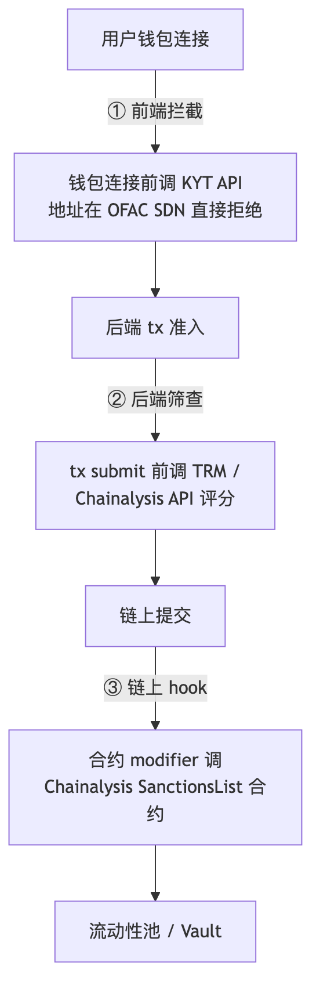
前端钱包连接拦截 （最低成本一层）：dApp 在 wallet.connect() 后立刻调一次 KYT API，地址命中 OFAC SDN / 高风险评分（> 7/10）→ 直接 disconnect + UI 提示。这一层 USDC 发行方 Circle 自家 dApp 标配，也是 Uniswap Frontend 2022 年起做的事。交叉参考 模块 10 §合规章 。后端 tx submit 前筛查 ：私有 mempool / 合规 relayer（如 bloXroute.regulated、Flashbots Protect 的合规通道）在打包 tx 前调 KYT，命中规则的 tx 直接丢弃。链上 hook （最严格但 gas 贵）：合约 modifier 里调 Chainalysis Sanctions Oracle （mainnet 部署的 SanctionsList 合约）—— Aave V3、Circle USDC 的 transferFrom 内嵌过此调用。链上调用每次约 2k-3k gas。
Forta agent 输出 SAR-ready 数据（实战代码）
合规团队需要 Suspicious Activity Report (SAR) 格式的 finding——固定字段 + 可审计 trail。下面这段 Forta agent 把 SAR 关键字段直接放进 finding metadata：
npm i @fortanetwork/forta-bot
// agent.ts — Forta SAR-ready transfer monitor
import { Finding , FindingSeverity , FindingType ,
HandleTransaction , TransactionEvent , ethers } from '@fortanetwork/forta-bot' ;
const USDC = '0xA0b86991c6218b36c1d19D4a2e9Eb0cE3606eB48' ;
const SDN_LIST = new Set ([
'0x...tornado-cash-router' ,
'0x...lazarus-attributed-1' ,
]); // 从 OFAC SDN 同步, 实战接 TRM API
export const handleTransaction : HandleTransaction = async ( tx : TransactionEvent ) => {
const findings : Finding [] = [];
const transfers = tx . filterLog (
'event Transfer(address indexed from, address indexed to, uint256 value)' ,
USDC ,
);
for ( const t of transfers ) {
const { from , to , value } = t . args ;
const usd = Number ( ethers . formatUnits ( value , 6 ));
const hit = SDN_LIST . has ( from . toLowerCase ()) || SDN_LIST . has ( to . toLowerCase ());
if ( ! hit && usd < 10 _000 ) continue ; // SAR 阈值: $10k+ 或 SDN 命中
findings . push ( Finding . fromObject ({
name : 'SAR-ready USDC transfer' ,
description : `${ usd . toFixed ( 0 ) } USDC ${ from } -> ${ to }` ,
alertId : 'SAR-USDC-1' ,
severity : hit ? FindingSeverity.Critical : FindingSeverity.Info ,
type : FindingType . Suspicious ,
metadata : {
// SAR / FinCEN Form 111 关键字段
reportingTime : new Date (). toISOString (),
txHash : tx.hash ,
blockNumber : String ( tx . blockNumber ),
originator : from ,
beneficiary : to ,
amountUSD : usd.toFixed ( 2 ),
currency : 'USDC' ,
chain : 'ethereum' ,
sdnHit : String ( hit ),
kytProvider : 'pending' , // 后端再调 TRM/Chainalysis 补完
},
labels : hit
? [{ entity : from , entityType : 1 , label : 'sdn-hit' , confidence : 1.0 }]
: [],
}));
}
return findings ;
};
合规团队拿到 finding 后，把 metadata 字段平铺进 SAR PDF 模板，附 tx Etherscan link，提交监管。Forta finding 的 alertId / labels 是这套链路里最便宜的"机器可读 SAR 上游" 。
bloXroute.regulated / Eden Network 的合规 mempool 现在都内嵌了 Chainalysis 实时筛查；自托管 RPC + 合规筛查的组合见 §3.4 erpc 配置 + 这一节的三层集成。
本节速记
- 一句话：人按按钮 = Safe，机器签名 = KMS OIDC，用户登录 = MPC/TEE。
- 一张图：信任模型对照表（私钥位置 / 单点失败 / 适合场景）。
- 一个动作：今天把 .env 里的 PRIVATE_KEY 删掉，改成 forge script --aws --account ...。
Chapter 15 TL;DR ：CEX 工程三大模块——多链充提（HD 派生 / memo / reorg buffer）、热温冷三层钱包（1% / 5-15% / >80%）、机构托管（Fireblocks / BitGo / Anchorage / Copper）。每一层都是真金白银的损失防线。
钩子 ：一个 reorg、一个 memo 漏读、一个扫块器 lag——CEX 充提系统看似简单，实际是行业里"出血最容易"的系统。2022 年 Polygon 157 块深 reorg 让多家 CEX 重算入金账目几小时。
类比 ：CEX 资金管理像银行柜台 + 金库 + 离岸保险库三层——柜台留小额日常取（热），金库放当天准备金（温），离岸保险库放绝大部分储备（冷）。比例倒了银行就是雷曼。
模块 11 前 13 章把"链/合约/RPC/索引/监控/CI/密钥"讲透了——但全书最缺的视角是 CEX 工程 。CEX 不写合约，但它跑着比一般 DeFi 协议大两个数量级 的工程系统：每秒数千笔充值 webhook、跨 5+ 链的扫块 + reorg 处理、热/温/冷三层资金流转、机构托管 + MPC 钱包决策。CEX 工程师面试也最缺好资料。这一章给你一份"如果明天去 CEX 报到，第一周该看的图谱"。
业务交叉：模块 04 中心化交易所；模块 08 合规与监管 PoR 章；本模块 11 §13 合规节点服务（上一节）。
14.1 多链充提系统
充提系统是 CEX 工程"看起来最简单实际最容易出血的"系统——一个 reorg、一个 memo 漏读、一个扫块器 lag，就是真金白银的损失。
deposit address 池：HD 派生 vs 单一汇集 + memo
模型
链典型
用户体验
工程复杂度
风险点
HD 派生（每用户一地址） EVM 链、BTC、Solana
直接转账即可
中（地址管理 + 扫块全派生）
用户错链转账损失
单一汇集 + memo/tag XRP、Stellar、EOS、TON
必须填 memo/tag
高（缺 memo 客服处理）
用户漏填 memo → 资金混入主账户
混合（一地址多用户） 早期 ETH
充值无法关联到用户
低
强依赖 tx hash 对账
XRP / Stellar / EOS / TON 是行业里 memo/tag 模型的"老大难"——用户漏填 memo 占客服工单 #1。规模大的 CEX 都做了"memo missing detector"——24h 内未匹配的入金按金额 + 时间窗口启发式归还。
扫块器：5 链对比
链
拉取方式
推荐工具
reorg 频率
备注
EVM (ETH/Polygon/BSC/Base) eth_getLogs (Transfer event) vs trace_block (internal tx)reth 自建 + erpc
较低（PoS 后）
internal tx（合约转账给用户）必须用 trace
Solana websocket commitment=processed → confirmed → finalized
RPC 自建 + Yellowstone gRPC
极少 fork
finalized 之前不能 credit；Helius / Triton 商业
Tron HTTP event server (TRC-20 Transfer)
java-tron full
极少（19 SR finality）
TRC-20 USDT 是充值量 #1 资产
BTC trusted explorer + 6 confirmation
bitcoind + electrs
偶发深 reorg
按 vout 解析、UTXO 模型
Cosmos / Tendermint tx events (recipient.module)
tendermint RPC + cosmos-sdk grpc
极少
不同 chain 字段差异大
reorg buffer 深度策略（user-credit confirmation）
链
推荐 confirmation
finality 模型
历史最深 reorg
BTC 6 conf
PoW 概率 finality
24 块（早期）/ 6 块（成熟期）
ETH 64 conf（约 2 epoch）
Casper FFG 64 块强 finality
7 块（合并前）/ 后罕见
Polygon PoS 256 块（heimdall checkpoint）
checkpoint 入 ETH
157 块（2022 春）
BSC 35 conf
21 验证人 PoSA
11 块（2024 偶发深 reorg）
Tron 19 SR finality
19 SR 中 13 SR 签名
极少
Solana rooted（32 slot）
Tower BFT + voting
fork 短期可见，rooted 后稳定
CEX 通常"按链动态"——头部 CEX 还会根据 mempool / hashrate 临时上调 BTC confirmation 阈值（如算力骤降时从 6 升到 12）。
用户 to-credit 状态机（一句话版）
pending（扫块器发现）→ confirming（进 latest 块）→ credited（满足链阈值）。三个分叉：mempool 丢弃 → dropped；reorg → freeze 用户余额 + 人工审核；KYT 命中 SDN → blacklisted + SAR 上报（§13.8）。铁律 ：极端深 reorg 倒回已 credit 余额，必须有"链上不可能事件"硬阈值 alert。
14.2 热/温/冷三层钱包架构
CEX 资金管理铁律：热钱包永远不应超过用户总资产的 1-5% 。冷钱包占比一般 > 80%，温钱包 5-15% 做缓冲。以下是参考的三层 SLA：
层
资金占比
签名方式
出币延迟 SLA
审批门槛
热（hot） 1-5%
HSM 或 MPC 签名服务（自动）
< 1 min
无人工，规则驱动
温（warm） 5-15%
Multisig（如 3/5）+ 人工审批
5-30 min
1 名运营审批
冷（cold） > 80%
离线签名 + 物理隔离
4-24 h
多名 C-level + 物理仓库
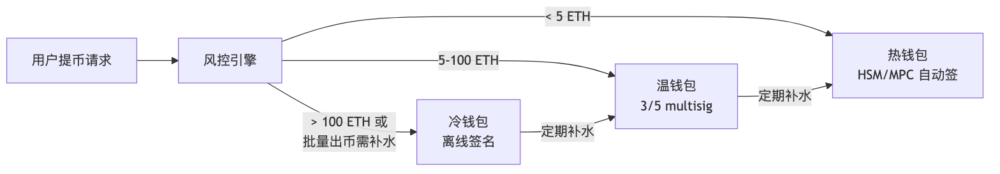
批量提币：nonce 串行 + gas 调度 + Merkle 签名
EVM 链上 1 个钱包发多笔 tx 必须 nonce 串行——否则后一笔会被前一笔卡住。CEX 的"批量提币批次"标准做法：
批次组装 ：5-10 min 一个批次，把这个窗口内同链同币种的提币聚合；nonce 串行 ：批次内 tx 按 nonce 递增，gas price 用同一个 base + tip；Merkle root 一次签名 ：把 N 笔 tx 哈希组成 Merkle tree，root 用 HSM/MPC 签一次，每笔 tx 复用 sigsplit（如 Coinbase 自家方案）；失败 tx 单独重发 ：mempool 丢弃的 tx 走 Flashbots Protect 重提交。
审计签名链（audit trail）
每笔出币必须留 4 列：who（触发人 OAuth/SSO）/ when（UTC）/ approver（multisig signer 地址 + 设备 ID）/ address（收款地址 + KYT 评分 + name tag）。落库必须 append-only（PostgreSQL 触发器 / S3 Object Lock），不允许任何 ops 改历史——合规审计直接吃这张表。
14.3 机构托管 4 强对比
非 CEX 自营、机构（基金 / 上市公司 / 银行 / 大型 DAO Treasury）持有 crypto 时，几乎都用外部托管 ——四家市占率头部如下：
厂商
技术栈
合规等级
链覆盖
成本（bps/年）
客户画像
Fireblocks MPC + Nitro Enclave
NYDFS BitLicense + SOC2 Type II
100+
5-25 bps
#1 市占，CEX/DeFi 协议/做市商
BitGo MPC + cold storage + Trust Charter
South Dakota Trust Charter（信托）
60+
10-30 bps
早期 CEX / ETF 托管（含部分 BTC ETF）
Anchorage Digital HSM + qualified custody
OCC National Trust Charter（联邦持牌银行，唯一）
30+
15-50 bps
银行 / 上市公司 / 联邦合规要求
Copper MPC + ClearLoop（off-exchange settlement）
英国 FCA + 瑞士 FINMA
50+
8-25 bps
机构 prime broker、对冲基金
关键差异化
Anchorage 是唯一拿到美国联邦银行执照（OCC charter）的——上市公司 + 银行系客户的合规要求只有它能满足；Copper ClearLoop 让客户资金留在 Copper 托管，但能在合作 CEX 上交易 ——避免 FTX 式风险（资金不进 CEX 钱包），机构 prime broker 标配；Fireblocks Key Link 让客户已有的 HSM/MPC 系统直接接入 Fireblocks workflow——不用迁 key，最大客户群转换成本最低；BitGo 的 Trust Charter 让它可作为"qualified custodian"被部分 ETF 选中。
MPC 钱包 vs Multisig
维度
MPC（Fireblocks 类）
Multisig（Safe 类）
密钥位置
链下分片（threshold）
链上合约
链覆盖
广（理论上任意链）
窄（受合约支持）
链上透明
不透明
完全透明
审计成本
高（依赖厂商报告）
低（链上可验证）
单签延迟
50-500 ms
1-2 块
适合
机构 / 多链做市商
DAO / DeFi protocol admin
选型一句话：机构大额多链选 MPC（Fireblocks / BitGo / Copper）；DAO / 透明审计 EVM 主选 Multisig（Safe / Squads）；个人中等额度走 Safe 2/3 + 硬件钱包。本模块 §13.2-§13.6 给协议方 / 个人 / 嵌入式钱包视角；本节补"机构托管"层。
14.4 链特异性 reorg 处理事故回顾
CEX 充提工程师必须熟悉的"教科书事故"：
时间
链
事故
工程教训
2010 BTC
value-overflow（块 74638，凭空铸 1840 亿 BTC）
必须有"链上不可能事件"的硬阈值 alert
2013-03 BTC
BIP50（v0.7 / v0.8 不兼容引发 24 块 reorg）
confirmation 必须能动态调高
2022-05 Polygon PoS
157 块深 reorg
用 heimdall checkpoint 入账，不要相信 bor 块号
2024 BSC
偶发 11 块深 reorg
confirmation 提到 35+，必要时调 50
多次 Solana
fork / 长 unconfirmed window
必须等 rooted（commitment=finalized），不能 credit on processed
多次 Tron
19 SR 中失效 7 个 → finality 受影响
监控 SR 健康度，异常时延后 credit
CEX 入金风控团队会维护一张"按链动态阈值表"——hashrate 突变、SR 健康度、validator participation 跌破阈值时立刻 临时上调 confirmation。这是和 DeFi 工程师视角最大的差别：DeFi 默认信链，CEX 必须按"今天链有多稳"动态信链 。
本节速记
- 一句话：热温冷三层 + 按链动态 confirmation = CEX 抗血液流失底线。
- 一张图：用户提币 → 风控 → 热/温/冷三档分流。
- 一个动作：把"按链 confirmation 阈值表"和"reorg 事故清单"打印贴墙，oncall 直接对照。
Chapter 16 TL;DR ：主链用 Etherscan v2（一个 key 50+ 链），长尾 / 自家 L2 用 Blockscout（开源、可自托管、API 兼容）；前端按 chainId 路由——单一 explorer 是单点依赖。
钩子 ：2023-12 圣诞前 Etherscan 主站宕机 6 小时，所有自动化 verify、所有前端的 "在 Etherscan 查看交易" 链接全挂——团队那时才意识到 explorer 是单点依赖。2025-04 又出过一次。
类比 ：Etherscan / Blockscout 关系像 Google / DuckDuckGo——主流好用但偶尔宕机，备一个就不慌。
Etherscan v2 : 单 API key 覆盖 50+ EVM 链 (chainId 区分). 老牌数据丰富, 闭源, 历史多次全网故障 (2023-12 / 2025-04).Blockscout : 开源自托管, PRO API 兼容 Etherscan endpoint, 覆盖 100+ EVM 链, OP Stack / Arbitrum 原生集成.
来源: Blockscout PRO API , Etherscan API V2 Multichain
实战: 主链用 Etherscan, 长尾 / 自家 L2 用 Blockscout, 前端按 chainId 选 explorer URL.
本节速记
- 一句话：Etherscan 主、Blockscout 备，前端按 chainId 路由。
- 一张图：chainId → explorer URL 映射的最小代码 5 行。
- 一个动作：把前端"View on Etherscan"按钮改成函数，参数化 chainId。
Chapter 17 下面五个 demo 把前面 §2-§14 的所有概念压缩成"周末两小时跑一遍"的可复制实操。假设你想跑一台 home staker 节点 + 一个数据后端 + CI——按 16.1 → 16.2 → 16.3 → 16.4 → 16.5 顺序做完，理论部分会变成肌肉记忆。完整代码见 code/ 与 exercises/。
16.1 启动 reth + lighthouse Sepolia (15 min)
cd code/01-reth-lighthouse-sepolia
./setup.sh # 生成 jwt + 起容器
docker compose logs -f reth # 等 4-6h sync
curl -s http://127.0.0.1:8545 \
-H 'Content-Type: application/json' \
-d '{"jsonrpc":"2.0","method":"eth_blockNumber","params":[],"id":1}' | jq
生产 (nginx + prom + grafana): docker compose -f docker-compose.full.yml up -d
16.1.1 Ponder indexer GitHub Action 部署
五步流水线骨架：
# .github/workflows/ponder-deploy.yml
on : { push : { branches : [ main ], paths : [ "indexer/**" ] } }
permissions : { id-token : write , contents : read } # OIDC 拿 AWS 临时凭证
jobs :
deploy :
steps :
- uses : actions/checkout@v4
- uses : pnpm/action-setup@v4
- run : cd indexer && pnpm install && pnpm typecheck && pnpm lint
- run : docker build -t my-indexer:${{ github.sha }} indexer/
- uses : aws-actions/configure-aws-credentials@v4 # OIDC role
with : { role-to-assume : arn : aws : iam :: ... : role/github-deploy }
- run : | # ECR push + ECS deploy
aws ecr get-login-password | docker login --password-stdin $ECR_URL
docker push $ECR_URL/my-indexer:latest
aws ecs update-service --cluster prod --service ponder-indexer --force-new-deployment
完整版（含 pnpm cache / version pinning / 多 tag）见 code/02-ponder-erc20-indexer/.github/workflows/
16.2 Ponder 索引 USDC Transfer (20 min)
cd code/02-ponder-erc20-indexer
docker compose up -d # 起 postgres
cp .env.example .env # 填你的 RPC URL
pnpm install
pnpm dev
# 打开 http://localhost:42069/graphql 测试
16.3 Foundry CI 接 GitHub (5 min)
cp code/03-foundry-github-action/.github/workflows/foundry.yml \
<your-foundry-repo>/.github/workflows/foundry.yml
git push
# Settings -> Secrets: MAINNET_RPC_URL, ETHERSCAN_API_KEY, DEPLOYER_PK
16.4 Tenderly: 上传源码 + 创建 alert (10 min)
cd code/04-tenderly-alert && ./upload-source.sh
16.5 Helios light client (5 min)
cd code/05-helios-light-client
ALCHEMY_URL = https://eth-mainnet.g.alchemy.com/v2/YOUR_KEY ./run-helios.sh
bun run verify-balance.ts # 另一终端
Chapter 18 九道习题按"读懂 → 选型 → 实操"递进，前三题有完整答案 (ANSWER.md)，后六题给思路提示自行完成。建议读完一节立刻做对应习题，比读完整章再回头做留存度高 3 倍。
17.1 习题 1: 计算 reth + lighthouse 硬件 / 月度成本
见 exercises/01-hardware-cost-calculator/calc.ts. 答案: ANSWER.md.
要点: 全节点 ¥10000/年 自建; archive ¥14000/年; 云对照 ¥42000/年. NVMe 是核心成本, archive 必须企业级 / 高端 TLC.
17.2 习题 2: 写 Forta agent 监测 ERC20 大额转账
见 exercises/02-forta-large-transfer-agent/. 答案: ANSWER.md.
要点: 用 filterLog + bigint, 多链复用, labels 做风控级联.
17.3 习题 3: Foundry deploy + verify 全自动
见 exercises/03-foundry-deploy-verify/. 答案: ANSWER.md.
要点: keystore 加密私钥, --slow 防 nonce 错乱, fs_permissions 写 deployments/.json, CREATE2 跨链同地址.
17.4 习题 4: 设计 Subgraph schema for Uniswap V3
(自行作答, 思路提示)
思路: Pool(id, token0, token1, fee), Position(id, owner, pool, liquidity, tickLower, tickUpper), Swap(id, pool, sender, amount0, amount1, sqrtPrice, tick, ts), Mint, Burn, Collect。关系: Pool 1-N Position, Pool 1-N Swap。derived field: 24h volume / TVL。
易踩坑: tick 用 BigInt 是惯例（Subgraph schema 没 int24）；Int (i32) 也合法（int24 装得进 i32）, liquidity 用 BigInt (u128), 不要 BigDecimal 算定价 (精度丢)。
17.5 习题 5: Defender Sentinel 配置改成 Tenderly Alert
(自行作答, 思路提示)
思路: Sentinel 的 condition (function args/event params) 一对一映射到 Tenderly Alert YAML。Autotask (JS) 改写成 Tenderly Web3 Action (TS, serverless)。Trigger 从 alert callback 改 webhook URL 调 Web3 Action。
关键差异: Tenderly Web3 Action 256 MB / 60s, Autotask 256 MB / 5 min, 长任务要拆。
17.6 习题 6: 客户端多样化 staking 拓扑 (32 个 validator)
(自行作答, 思路提示)
思路: 32 validator -> 至少 4 种组合, 每组合 8 个。例: (reth+lighthouse) x 8, (nethermind+teku) x 8, (besu+prysm) x 8, (erigon+nimbus) x 8。
进阶: 跨地理 (US-East / EU-West / Asia), 跨 ISP, 跨电源域。
17.7 习题 7: PR 触发 fork mainnet 测试
(自行作答, 思路提示)
思路: jobs 配 paths-filter, 仅修改 contracts/* trigger。fork: forge test --fork-url $MAINNET_RPC_URL --fork-block-number 22000000。覆盖率上 Codecov, PR 自动评论。
17.8 习题 8: 设计 RPC 网关多 upstream 配置
(自行作答, 思路提示)
思路: 用 erpc 配置 (yaml)。upstream 写 [自建 reth, Alchemy, QuickNode, dRPC]。给重 trace 调用单独路由 dRPC (flat 价)。对 eth_call 设 cache 30s。失败自动 fallback。
17.9 习题 9: Helios + dApp 集成
(自行作答, 思路提示)
思路: viem 的 transport 指 http://127.0.0.1:8545 (Helios), 而非直连 Alchemy。启动时打开 Helios 进程, dApp 通过 http://localhost:8545 透明访问。用户感知不到, 但所有响应都被验证。
Chapter 19
AI 在基础设施的应用（calldata 解码 / 异常检测 / schema 脚手架 / docker-compose 生成 / 不可替代的 Linux+网络+存储经验）详见模块 12。本模块只补一条铁律：LLM 给的 docker-compose 必须过 5 项清单再 up -d ——--http.api 不含 admin / JWT 文件 ro 挂载 / 30303 tcp+udp 都开 / restart: unless-stopped / stop_grace_period: 5m。
Chapter 20 下一站 ：节点、RPC、indexer、监控、CI/CD、密钥、CEX 工程——这一模块把"合约之外"的工程基底铺到了能 24/7 跑生产的程度。但 §18 只是预览了 AI 在告警分类、calldata 解码、subgraph 脚手架上的浅层应用，下一模块 12-AI×Web3 把 AI 真正接进开发全链路：审计辅助、链上数据分析自动化、AI Agent 钱包、链上推理服务——把这一模块搭好的基础设施变成"AI 能调用的链上能力"。
附录
附录按需深入，不影响主线阅读。主线（§1-§19）已覆盖跑节点 + indexer + CI + 监控 + 密钥 + CEX 工程的端到端工程闭环；附录提供内部架构、完整操作手册、高级话题。
Chapter 21 TL;DR ：reth v2.0 删去 plain state 双写，historical changesets 移到 append-only static files，trie 计算从 200ms 降到 <50ms，这是 1.7 Gigagas peak block 400ms 完成 state root 的根因。
A.1 三种存储范式对比
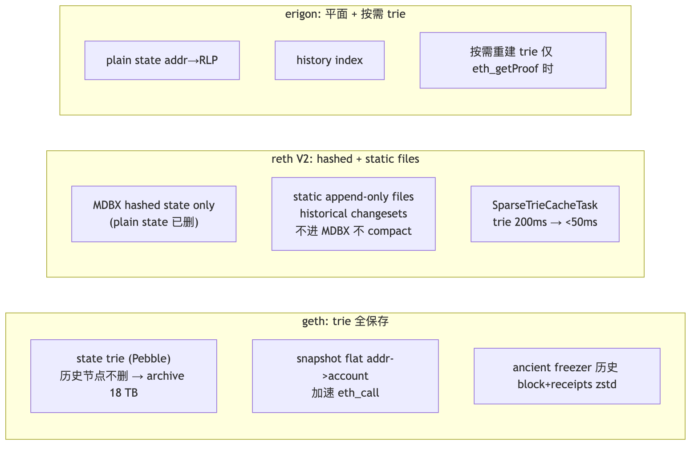
A.2 reth staged sync 七阶段
headers → bodies → sender recovery → execution (revm) → hashing → merkle → tx lookup
每阶段独立 ETL、可重试、可并行——比 geth 快 1.5-2x。
A.3 2026-04 基准（mainnet，Hetzner AX52）
指标
reth v2.0
geth v1.16
nethermind
besu (Bonsai)
Fresh sync full
4.5 h
7.5 h
6.5 h
8 h
Fresh sync archive
14 h
7 d+（hash-based legacy 数字；geth 1.16+ path-based scheme 后 archive 可降到 ~3 TB / 5 天，2025-11+）
36 h
48 h
磁盘 full
700 GB
1.2 TB
1.4 TB
1.5 TB
磁盘 archive
2.5 TB
18 TB（同上注：path-based 后 ~3 TB）
12 TB
6 TB
eth_call p99
8 ms（hot cache；cold 在 30-60ms）
15 ms
20 ms
25 ms
1.7 Gigagas 块持久化
400 ms
OOM
>5 s
慢
Era1 文件 ：reth/erigon 用 era1 bootstrap archive，14h vs geth 7d 的根因——era1 是 epoch 化的预编译历史数据。
A.4 EL 选型速查
场景
首选
备选
自建 RPC 给前端
reth full
geth full
protocol 层 / 大厂 staking
nethermind / besu
reth
indexer 后端
reth archive
erigon 3
树莓派家庭节点
nethermind
nimbus
联盟链 / 企业
besu
nethermind
client diversity 核心：geth 占 51%+ 时若出 bug，错误链被视为"多数真理"。新部署优先 reth/nethermind/besu。
来源: Paradigm Reth 2.0 (2026-04)
Chapter 22 背景 ：2022 年 prysm 占 70%，EthStaker 社区花三年劝迁。2026-04：prysm 38%、lighthouse 33%、teku 18%、nimbus 6%、lodestar 5%——接近 client diversity 安全线。
B.1 五客户端对照
CL
语言
市占
内存
磁盘
checkpoint sync
速记
lighthouse Rust
~33%
2-4 GB
~120 GB
2-5 min
Fulu ready，hierarchical diffs I/O 降 4x，eth-docker 默认
prysm Go
~38%
4-8 GB
~150 GB
5-15 min
内置 Web UI，内存吃得多
teku Java
~18%
4-8 GB
~80 GB
3-8 min
ConsenSys + Splunk 企业集成
nimbus Nim
~6%
<1 GB
~100 GB
5-10 min
RPi 唯一选择
lodestar TypeScript
~5%
4-6 GB
~110 GB
8-15 min
浏览器 light client
B.2 CL 进程内部职责
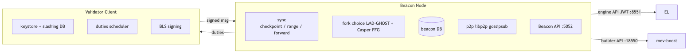
同一组 keystore 跑两个 VC = 最容易触发 slashing。slashing DB 必须 single-source-of-truth。
来源: migalabs CL benchmarks , Sigma Prime lighthouse releases
Chapter 23 前置：附录 H Pectra 时间表 ——本附录所有 EIP-7251/7691/7702 内容假定 Pectra 已上线。
钩子 ：2024 年某 staking 服务商机房迁移——工程师 scp keystore 到新机器后忘关老 VC，9 个 validator 触发 double-sign slashing，共赔 144 ETH（~$50 万）。
C.1 solo staking 全流程
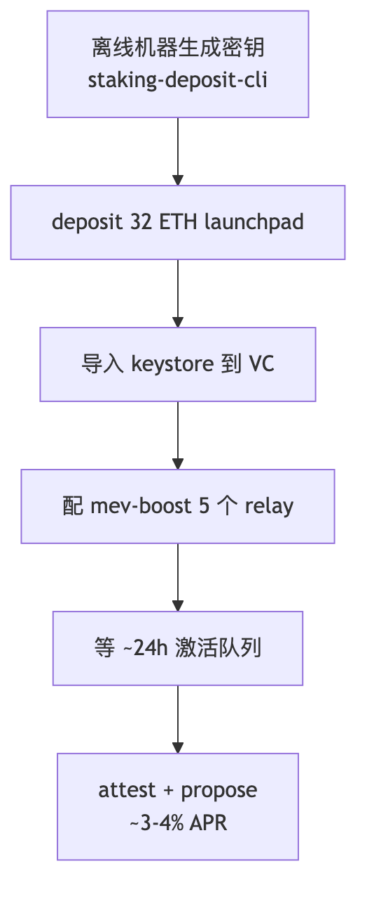
C.2 0x01 → 0x02 升级（Pectra EIP-7251 MaxEB）
维度
0x01（旧）
0x02（Pectra 后推荐）
MaxEB
32 ETH（超出强制 partial withdraw）
2048 ETH
复利
否
是
合并多 validator
不能
能（consolidate）
# 1. 检查 credentials 类型
curl -s http://localhost:5052/eth/v1/beacon/states/head/validators/$IDX \
| jq '.data.validator.withdrawal_credentials'
# 0x01... 需升级
# 2. 生成 BLS-to-execution change
./deposit.sh generate-bls-to-execution-change \
--chain mainnet \
--mnemonic "your mnemonic" \
--bls_withdrawal_credentials_list 0xCURRENT \
--validator_start_index 0 \
--validator_indices VALIDATOR_IDX \
--execution_address 0xYOUR_NEW_0x02_ADDR
# 3. broadcast
curl -X POST http://localhost:5052/eth/v1/beacon/pool/bls_to_execution_changes \
-H 'Content-Type: application/json' --data @bls_to_execution_changes.json
C.3 consolidation（多 validator 合并为 1）
EIP-7251 consolidate 系统合约部署在 0x0000BBdDc7CE488642fb579F8B00f3a590007251（Pectra 主网实际部署地址），raw calldata 96 字节 ：source_pubkey (48B) || target_pubkey (48B)；cast send 直接传 calldata，无 Solidity 函数签名。配套的 EIP-7002 withdrawal/exit 系统合约部署在 0x00000961Ef480Eb55e80D19ad83579A64c007002，用于从 EL 触发 partial withdrawal 与 full exit。
cast send --rpc-url $RPC --account deployer \
0x0000BBdDc7CE488642fb579F8B00f3a590007251 \
$( cast concat-hex $SOURCE_PUBKEY $TARGET_PUBKEY )
合并后：source 进入 exit queue；target 收到全部 ETH；余额上限 2048 ETH。
C.4 web3signer：把 keystore 与 VC 解耦
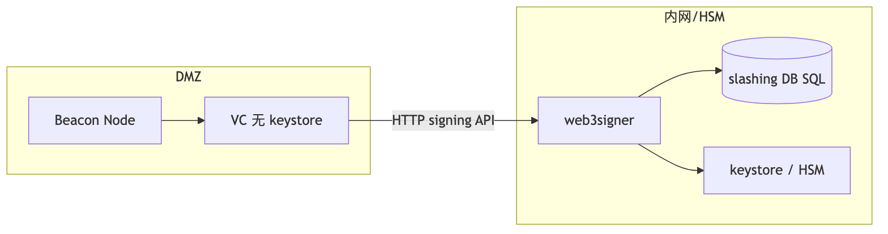
HSM 接入：YubiHSM 2 或 AWS CloudHSM，web3signer 走 PKCS#11。
C.5 迁移时 EIP-3076 slashing DB 导出导入
# prysm 导出
prysmctl validator slashing-protection-history export \
--datadir= /path/to/prysm \
--slashing-protection-export-dir= /path/to/export.json
# lighthouse 导入
lighthouse account validator slashing-protection import /path/to/export.json
切换客户端必须做此步 。2024 年至少 3 次大型 slashing 是"迁移没导出 slashing DB"所致。
C.6 Beacon API 速查
Beacon API 速查 ：/eth/v1/beacon/headers（区块头）/ /eth/v1/beacon/states/head/validators（validator 状态）/ /eth/v1/validator/duties/attester/{epoch}（attestation 任务）/ /eth/v1/beacon/pool/attester_slashings（slashing 池）
C.7 Lido CSM 与客户端选型
Lido CSM (Community Staking Module) ：Pectra 后让个人 operator onboard Lido 的关键路径——bond 2.4 ETH，绑定 Rated Network performance score。2026 home staker 主流路径。
32 ETH home staker 选型：Lighthouse（Rust 主流）/ Nimbus（资源最低）/ Teku（机构）；Prysm 占有率高已不推荐独走（client diversity）。
来源: EthStaker Pectra Features , EIP-3076
Chapter 24 背景 ：web3signer 仍是单 key 单服务。DVT 把 validator key 拆成 N 份给 M 个 operator，t-of-N 阈值签名——单机宕机不影响出块，双签需 t 个 operator 同时作恶。
D.1 两个主流方案
项目
阈值默认
共识层
主网状态 (2026-04)
适合
Obol Network 4-of-6 / 5-of-7
Charon QBFT
mainnet alpha+，Lido Simple DVT 集成
DAO / 大型 staker
SSV Network 4-of-7 / 7-of-10
Istanbul BFT
permissionless mainnet
公开 operator 市场 / 个人
D.2 架构差异
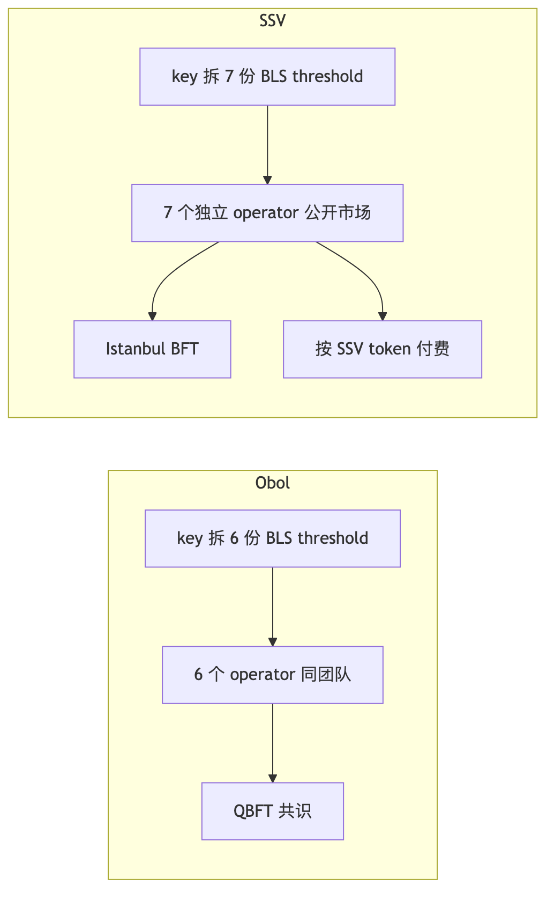
2025-Q3：~547,968 ETH（17,124 validators）在 DVT 上，占总 staked ETH ~1.5%，Lido Simple DVT 占其中过半。
来源: Obol Road to Mainnet , SSV permissionless mainnet
Chapter 25 E.1 Relay 列表（2026-04）
Relay
市占 (payload)
审查模式
relay.ultrasound.money
33.92%
non-censoring
titanrelay.xyz
24.19%
non-censoring
bloxroute.max-profit
14.67%
non-censoring
aestus.live
10.03%
non-censoring
bloxroute.regulated
9.07%（波动大）
OFAC 合规
boost-relay.flashbots.net
4.22%
non-censoring
bloXroute regulated 月度波动区间约 5-15%，选型前用 relayscan.io 复核 28 天滚动数据。
E.2 Builder 市场
beaverbuild + rsync 合计 >50% payload；Flashbots builder 开源，做 fallback。BuilderNet 体系（beaver/rsync/titan）已形成寡头。
E.3 Censorship 现状（2026-04）
维度
2022
2024
2026-04
审查 relay 占比
~80%
30%
9%
TC 交易上链 p50
~6 块
~2 块
~1 块
E.4 ePBS（Glamsterdam）与 SUAVE
ePBS ：把 PBS 写进协议——validator 通过链上 commitment + reveal 直接拿 builder block，不再需要信任 relay。Glamsterdam（2026 H1）= ePBS + BAL + gas limit 调整。
SUAVE ：Flashbots 另一条路——让 builder 拍卖去中心化，2026 仍在 testnet。ePBS 解决"不再需要信任 relay"，SUAVE 解决"builder 不再是中心化巨头"，二者互补。
来源: relayscan.io , Datawallet Glamsterdam
Chapter 26 // ponder.schema.ts — Ponder 0.11+ Drizzle ORM
import { onchainTable , relations , primaryKey , index } from "@ponder/core" ;
export const account = onchainTable ( "account" , ( t ) => ({
address : t.hex (). primaryKey (),
balance : t.bigint (). notNull (). default ( 0n ),
transferCount : t.integer (). notNull (). default ( 0 ),
}));
export const transferEvent = onchainTable ( "transfer_event" , ( t ) => ({
id : t.text (). primaryKey (),
from : t.hex (). notNull (),
to : t.hex (). notNull (),
value : t.bigint (). notNull (),
blockNumber : t.bigint (). notNull (),
txHash : t.hex (). notNull (),
logIndex : t.integer (). notNull (),
}), ( table ) => ({
fromIdx : index (). on ( table . from ),
toIdx : index (). on ( table . to ),
}));
export const accountRelations = relations ( account , ({ many }) => ({
sent : many ( transferEvent , { fields : [ account . address ], references : [ transferEvent . from ] }),
received : many ( transferEvent , { fields : [ account . address ], references : [ transferEvent . to ] }),
}));
ponder.config.ts 多合约示例：
export default createConfig ({
database : { kind : "postgres" , connectionString : process.env.DATABASE_URL },
networks : {
mainnet : { chainId : 1 , transport : http ( process . env . PONDER_RPC_URL_1 ) },
},
contracts : {
USDC : {
network : "mainnet" ,
abi : erc20Abi ,
address : "0xA0b86991c6218b36c1d19D4a2e9Eb0cE3606eB48" ,
startBlock : 22300000 ,
},
WETH : {
network : "mainnet" ,
abi : erc20Abi ,
address : "0xC02aaA39b223FE8D0A0e5C4F27eAD9083C756Cc2" ,
startBlock : 22300000 ,
},
},
});
性能基线（7 天历史）：自建 reth archive 本机 ~4 min；Alchemy free tier ~22 min；Envio HyperSync ~1 min。
Chapter 27
触发条件与三板斧防御已在 §4.3 给出；本附录补事故回顾 和告警配置 两项 oncall 必备资料。罚则更新：Pectra (EIP-7251) 后初始 slashing penalty = 1/4096 effective balance（~0.0078 ETH，32 ETH validator）；correlation penalty 按同时被 slash 数量叠加，最坏趋近全额。
G.1 事故回顾（2023-2025）
年份
原因
损失
2023
机房迁移未关老 VC
~32 ETH（2 validator）
2024
"只切 EL 未切 VC" 误操作
~112 ETH（7 validator）
2024
SaaS 迁移未导出 EIP-3076 slashing DB
144 ETH（9 validator）
G.2 anti-slasher 告警
- alert : ValidatorSlashed
expr : increase(validator_monitor_slashed_total[5m]) > 0
for : 1m
labels : { severity : critical }
至少装 beaconcha.in Telegram bot（免费）。一个 missed proposal = $30-100。
Chapter 28 Pectra 主网上线：2025-05-07 。主要 EIP：EIP-7251（MaxEB 2048 ETH）、EIP-7002（EL 触发 exit/withdrawal）、EIP-7549（attestation 效率优化）。
H.1 影响速查
EIP
变化
操作要求
EIP-7251 MaxEB
单 validator 上限 32→2048 ETH
升级到 0x02 credentials，可选 consolidate
EIP-7002 EL exit
可从 EL 合约触发 validator exit
0x02 credentials 才能用
EIP-7549
attestation 聚合效率提升
升级 CL 客户端
H.2 是否需要操作
已是 0x02 credentials ：MaxEB 自动生效，超过 32 ETH 不再 partial withdraw，而是累积复利仍是 0x01 ：建议升级到 0x02（见附录 C.2），Pectra 前后均可操作想合并多个 validator ：等 0x02 升级完成后用 consolidate（见附录 C.3）
H.3 Lido/大型 staker 的影响
Lido / Coinbase / Kraken 2025-Q4 大批量 consolidate，单月 active validator 数掉 ~16,000 个但总 ETH 不变。协议级降本：同等 staking 量但只需 1/64 attestation/proposal 流量，减轻共识层带宽压力。
来源: EthStaker Pectra Features , Markaicode EIP-7251 Guide
Chapter 29
这一附录聚合了三块"主线讲完直觉，工程化时再翻"的深度参考——Light Client 完整部署、节点同步策略、13 家 RPC 提供商横评 + 性能调优清单、五种 indexer 全谱系 + Subgraph 发布版本化。主线 §3 / §6 / 附录 A 已经把核心结论给你了，这里是落地细节。
I.1 Light Client（Helios）
2024 年某次 Infura 部分节点返回了一个错误的 USDC 余额——不是攻击，是它的 archive 集群其中一个节点 fork 走错链没追回，前端显示用户余额比实际多 1500 USDC，有人据此发起 swap 触发回滚。MetaMask 默认走 Infura，给假数据时用户无从分辨——这正是 light client 要解决的问题。
自建 EL+CL 信任最强，但移动端和浏览器装不下 700 GB。Light client 像在咖啡馆看完一份"印章齐全的快递单据"——你没仓库自己核对货物，但单据上的密码学签名（sync committee 多数 + merkle proof）让你确信送货人没掉包。MetaMask 接 Helios 后，"我相信 Infura" 变成 "我相信 sync committee 不会被盗 342 把 BLS 私钥"。
I.1.1 三种 light client
项目
语言
特点
状态
Helios (a16z)Rust
多链 (Ethereum + OP Stack), 启动 2 秒, 编译 WASM 可跑浏览器
主流, 推荐
nimbus light Nim
nimbus 项目内置 light mode, 资源极省
较冷门, mainnet ready
Lodestar light TypeScript
浏览器内 light client, ChainSafe 维护
dev / preview
来源: a16z Helios , Building Helios
I.1.2 Helios 工作原理
信任根 ：sync committee 多数（512 个 validator 中 ≥342 签名）。伪造需盗 342 个 validator 私钥、窗口仅 ~27 小时。
I.1.3 完整部署流程
步骤 1: 安装
# 推荐安装方式: heliosup 自动管理 release
curl https://raw.githubusercontent.com/a16z/helios/master/heliosup/install | bash
source ~/.bashrc
heliosup # 装最新 stable
helios --version # 确认安装成功
或用 cargo:
cargo install --git https://github.com/a16z/helios --tag v0.8.0 helios-cli
步骤 2: 拿 trusted checkpoint (多源交叉验证)
# 来源 1: ethpandaops
A = $( curl -s https://sync-mainnet.beaconcha.in/checkpointz/v1/beacon/slots | jq -r '.data.finalized.block_root' )
# 来源 2: 自己的 lighthouse beacon node (最可靠)
B = $( curl -s http://localhost:5052/eth/v1/beacon/headers/finalized | jq -r '.data.root' )
# 比较
if [ " $A " = " $B " ] ; then
echo "Trusted checkpoint: $A "
CHECKPOINT = $A
else
echo "checkpoint 不一致, 拒绝启动"
exit 1
fi
步骤 3: 启动 Helios
helios ethereum \
--network mainnet \
--consensus-rpc https://www.lightclientdata.org \
--execution-rpc $UNTRUSTED_ALCHEMY \
--checkpoint $CHECKPOINT \
--rpc-bind-ip 127 .0.0.1 \
--rpc-port 8545 \
--data-dir ~/.helios &
# 等约 2-5 秒, Helios 跟上 head
sleep 5
# 验证 Helios 已就绪
curl -s -X POST -H "Content-Type: application/json" \
--data '{"jsonrpc":"2.0","method":"eth_blockNumber","params":[],"id":1}' \
http://127.0.0.1:8545 | jq
步骤 4: dApp 中接入
// viem / wagmi 的 transport 指向 Helios, 用户无感
const config = createConfig ({
chains : [ mainnet ],
transports : {
[ mainnet . id ] : http ( process . env . HELIOS_URL ?? process . env . ALCHEMY_URL ),
},
});
完整验证脚本见 code/05-helios-light-client/verify-balance.ts.
性能 / 局限
维度
Helios
自建 reth full
Alchemy 直连
启动到可用
2-5 s
4-6 h sync
0 s
内存
100 MB
32 GB
0 (托管)
磁盘
几 MB
700 GB
0
单 query latency
50-200 ms (要拿 proof + 验证)
5-20 ms
30-100 ms
信任
sync committee 多数
完全自主
完全信任厂商
适合
钱包 / 浏览器 / 移动端
后端 / 高频应用
MVP / 不在意信任
多链支持
Helios 支持 Ethereum mainnet、OP Stack (Optimism / Base, 通过 derive 关系信任 L1)、其他 EVM (Polygon / Arbitrum, 实验性).
helios opstack \
--network optimism \
--execution-rpc $OP_ALCHEMY \
--rpc-port 8546 &
来源: a16z Helios , Building Helios
I.2 同步策略
假设你晚上 11 点开始跑节点，目标第二天早上能用。三种 sync 模式决定第二天醒来你看到的是绿勾还是红叉：full sync 像从图书馆第一本书读到最新一本（数周）；snap sync 像有人给你一张"截至昨天的快照"再补一晚增量（4-12h，主流默认）；archive sync 像 full sync 但保留每一页的高亮笔记（数周-月）。第一次跑节点九成的人选错的不是 EL/CL 客户端，是忘了开 checkpoint sync——CL 不开就要从 genesis 重放 ~5 天 。
I.2.1 EL 同步模式对照
模式
工作方式
用时
信任假设
full sync 从 genesis 重放每一笔交易, 自己重建 state
数周
仅信 P2P 多数
snap sync (默认)抓最近某个 finalized block 的 state snapshot, 之后从该点 full sync
4-12 h
信 snapshot 提供方 ~16 个区块
archive sync full sync + 保留全部中间 state
数周-月
仅信 P2P 多数
I.2.2 CL checkpoint sync (必开)
--checkpoint-sync-url= https://checkpoint-sync.sepolia.ethpandaops.io
给 CL 一个最近 finalized state root, 秒级同步. 不开则从 genesis 重放 (几天). 可信来源: mainnet (beaconcha.in / ethpandaops), sepolia/holesky (ethpandaops). 多源交叉验证更安全.
I.2.3 实测同步时间
测试机: Hetzner AX52 (Ryzen 7 7700X / 64 GB / 990 Pro 4 TB / 1 Gbps).
组合 (Sepolia)
EL sync
CL checkpoint sync
EL 磁盘
CL 磁盘
reth v2.0 + lighthouse v8.1
28 min
4 min
145 GB
38 GB
geth v1.16 + lighthouse v8.1
51 min
4 min
220 GB
38 GB
nethermind + teku
38 min
7 min
180 GB
24 GB
Mainnet 数据见 §2.3 表格 (同测试机).
I.3 RPC 服务详细横评
故事时间线还原：周五晚 10 点 NFT mint 开盘，预计 5000 用户。结果朋友在 X 转发，10 分钟涌进 50000 人，前端疯狂 eth_call 查白名单——Alchemy free tier 30M CU/月当晚被打穿，所有请求 429，用户看到 "transaction failed" 但其实交易压根没发出去。同样的故事 2024-2025 在 mint、空投领取、清算窗口至少出现过几十次。RPC 是协议的命门，但 99% 团队第一次部署时没认真选过。
下面按"先选托管商 → 用网关聚合 → 必要时自建"三步走，配三张表（13 家供应商对照、自建 vs 托管成本、性能调优清单）让你 30 分钟内做完决策。
I.3.1 主流 RPC 提供商横评 (2026-04)
提供商
计费模式
archive
trace_*
debug
月度免费
单 eth_call 等价成本 (相对)
特殊优势
Alchemy
CU (eth_call=26)
yes
yes
yes
300M CU
26x
Enhanced API (NFT/transfer summary)
Infura
request + 系数 (eth_call=80)（2024 后 Infura 改 daily request 计费，credit 系统已弃用——以官方 docs 为准）
yes
partial
partial
6M req
80x
ConsenSys 系, MetaMask 默认
QuickNode
credit (eth_call=20)
yes
yes
yes
10M credit
20x
SOC1/SOC2/ISO27001 全认证
Ankr
CU (eth_call=200)
yes
yes
yes
30M CU
200x
gRPC plan 降到 10x
dRPC
flat $6/1M req
yes
yes
yes
100k req
flat
重 trace/getLogs 性价比之王
Tenderly Gateway
request
yes
yes
yes
25M
中等
与 Tenderly Alert / Devnet 联动
Chainstack
request
yes
yes
yes
3M
中等
多链强 (50+), enterprise SLA
Blockdaemon
enterprise SLA
yes
yes
yes
N/A
N/A
机构 / 合规, 24/7 phone support
NodeReal
request (BSC/Opbnb 强)
yes
yes
yes
30M
中等
二线公链覆盖最全
GetBlock
request
yes
yes
yes
50k
中等
EVM + Bitcoin + Solana 统一 API
Validation Cloud
enterprise
yes
yes
yes
demo only
N/A
DeFi 专属 SLA
Stackup
bundler + RPC
partial
partial
partial
1M
N/A
4337 Bundler 主推, 同时提供 RPC
Rivet
request
yes
yes
yes
20k req
中等
隐私优先, 不记录请求
公共 / 公益 RPC:
公益 RPC
维护方
特点
1RPC Automata
隐私 (TEE 隔离), 默认免费
Llamarpc DefiLlama
完全免费, 多 RPC fallback 聚合
publicnode.com Allnodes
多链免费, 无注册
Cloudflare ETH gateway Cloudflare
免费, 限流较严
来源: Dwellir 2026 Best RPC Providers , QuickNode Best RPC 2026 , Chainnodes pricing
I.3.2 自建 vs 托管成本对照
reth + lighthouse 自建 ¥10000-15000/年 vs Alchemy Growth ¥17000/年. 自建额外优势: 数据可信、无 rate limit、archive/trace 不限次、隐私 (托管商能看到所有查询地址).
MEV searcher 必须自建：每次 mempool 查询托管商都可见。
I.3.3 RPC 网关 / 聚合器
网关
特点
erpc (开源)rate limit / cache / failover / multi-upstream, 用 Go, 配置 yaml
dRPC Gateway (托管)同上, 商业 SaaS
Tenderly Gateway 集成 Alert 和 Devnet
I.3.4 nginx 暴露自建 RPC
见 code/01-reth-lighthouse-sepolia/nginx/nginx.conf. 三层: TLS (Let's Encrypt) / basic auth (htpasswd) / limit_req_zone (50 req/s, 突发 100).
I.3.5 docker-compose 全栈
code/01-reth-lighthouse-sepolia/docker-compose.full.yml. 关键设计:
reth : 钉死版本, --http.api 不加 admin , 30303 TCP+UDP 防火墙放行.lighthouse : checkpoint sync 必开, 非 validator 加 --disable-deposit-contract-sync.nginx : reth 8545 不暴露公网, 走 443 + basic auth + rate limit 50r/s.prometheus : scrape reth :9001 + lighthouse :5054, 保留 30 天.grafana : 仅绑 127.0.0.1:3000, dashboard 用 Paradigm + Sigma Prime 官方 json.
docker compose -f docker-compose.full.yml up -d
docker compose logs -f reth # 等 EL sync
docker compose logs -f lighthouse # 等 CL sync
完整版（含 monitoring/nginx/prometheus/grafana 五服务，~115 行）见 code/01-node-bootstrap/docker-compose.full.yml
self-hosted RPC 性能调优 (实战清单)
# 1. 关 swap (节点 OOM 比 swap thrash 好处理)
sudo swapoff -a
sudo sed -i.bak '/ swap / s/^/#/' /etc/fstab
# 2. fd 上限提到 65535
ulimit -n 65535
echo "* soft nofile 65535" | sudo tee -a /etc/security/limits.conf
echo "* hard nofile 65535" | sudo tee -a /etc/security/limits.conf
# 3. 文件系统挂载: noatime + nodiratime 减少 I/O
sudo mount -o remount,noatime,nodiratime /var/lib/reth
# 4. TCP 缓冲区调大, P2P 不丢包
cat <<EOF | sudo tee /etc/sysctl.d/99-reth.conf
net.core.rmem_max = 134217728
net.core.wmem_max = 134217728
net.ipv4.tcp_rmem = 4096 87380 67108864
net.ipv4.tcp_wmem = 4096 65536 67108864
net.core.netdev_max_backlog = 16384
fs.file-max = 100000
vm.swappiness = 1
vm.dirty_ratio = 5
vm.dirty_background_ratio = 2
EOF
sudo sysctl --system
reth 性能调优:
reth node \
--chain mainnet \
--port 30303 \
--discovery.port 30303 \
--max-outbound-peers 100 \
--max-inbound-peers 200 \
--rpc.max-connections 5000 \
--rpc.gascap 50000000 \
--txpool.max-pending-txns 50000 \
--engine.persistence-threshold 2 \
--color always
关键 metrics 阈值 (Prometheus):
指标
警戒线
告警
reth_chain_height lag (vs CL beacon_head_state_slot)> 5 块
warning
reth_chain_height lag> 30 块
critical
process_resident_memory_bytes> 60 GB
warning
reth_rpc_request_duration_seconds p99> 2 s
warning
node_filesystem_avail_bytes / size< 20%
warning
node_filesystem_avail_bytes / size< 5%
critical (磁盘耗尽 = sync 卡死)
disk write IOPS
> 80% NVMe spec
warning
nethermind 性能基准 (官方):
docker run --rm -it \
--network host \
nethermind/jsonrpcbench \
--url http://localhost:8545 \
--duration 60 \
--threads 16 \
--method eth_call
实测 (Ryzen 7 7700X, mainnet head):
客户端
eth_call qps
eth_getLogs (100 块) qps
debug_traceCall qps
reth v2.0
12000
800
50
geth v1.16
7000
350
25
nethermind
5500
300
20
I.3.6 多节点高可用拓扑
至少两个机房 (跨 ASN/ISP). erpc 自带 health check + circuit breaker (lag > 30 块自动剔除). cache (eth_call 30s, eth_chainId 永久) 可挡 ~80% 请求.
I.4 Indexer 全谱系（详细）
新人最容易踩的坑：产品经理问 "首页要展示用户最近 30 天所有 swap 记录"，工程师写 eth_getLogs(fromBlock=head-216000) 然后等——15 秒后 RPC 报 "block range too large"，换成分批拉，发现要打 200 多次请求，10 分钟才返回。用户不会等 10 分钟，前端要"几百毫秒返回"。 这就是 indexer 存在的理由：监听 logs → 解码 → 写 Postgres → 暴露 GraphQL/SQL，把"链上即时计算"变成"数据库查询"。
2024-06-12 The Graph hosted-service 关停，让一批老项目的 subgraph URL 一夜变 404。新项目要在五条路径里选——TypeScript 团队选 Ponder，极速选 Envio，多链选 Goldsky 或 SQD，抗审查选 The Graph network，老项目迁移看 ABI 复杂度。
I.4.1 五种主流 indexer
方案
类型
部署
速度 (Uniswap V2 Factory bench)
链支持
何时选
The Graph (decentralized) hosted + 去中心化
Subgraph Studio + 网络
~158 min
60+
老项目迁移 / 享受去中心化
Ponder 0.10 自托管 TS 框架
Node.js + Postgres
~60 min (单 RPC), 4 min (本地 reth)
EVM 全部
TS 团队 / 后端 / 类型安全
Goldsky hosted, subgraph + Mirror 流
控制台 / CLI
~10 min
150+
需 webhook / 流到 BigQuery
Envio HyperIndex hosted + 自托管, 基于 HyperSync
TS/JS
~1 min
70+ EVM
极端高吞吐 / event 密集
Subsquid (SQD) 去中心化 query 网络 + Squid SDK
TS, Postgres + GraphQL
~5 min
100+ EVM/Substrate/Solana
多链 / 历史回填
来源: Envio 2026 Indexer Benchmarks , Chainstack Hosted Subgraphs
老 The Graph hosted URL 全部死链；新项目走 decentralized network + Subgraph Studio，TS 选 Ponder，极速选 Envio，多链选 Goldsky/SQD。
来源: The Graph Sunsetting Hosted Service , Envio 2026 Indexer Benchmarks
I.4.2 内部架构对比
I.4.3 Ponder 实战
Ponder 0.11+ 内置 Drizzle ORM。老 db.Account.create API 已迁移到 db.insert(accounts) query builder。
项目结构:
02-ponder-erc20-indexer/
├── package.json # @ponder/core ^0.10, viem 2, hono 4
├── ponder.config.ts # 链 + RPC + 合约 + ABI + startBlock
├── ponder.schema.ts # onchainTable + relations + primaryKey
├── abis/erc20Abi.ts # 仅保留 Transfer 事件
├── src/index.ts # ponder.on("USDC:Transfer", ...)
├── docker-compose.yml # postgres 16
└── .env.example # PONDER_RPC_URL_1 + DATABASE_URL
ponder.config.ts 要点:
export default createConfig ({
database : { kind : "postgres" , connectionString : process.env.DATABASE_URL },
networks : {
mainnet : { chainId : 1 , transport : http ( process . env . PONDER_RPC_URL_1 ) },
},
contracts : {
USDC : {
network : "mainnet" ,
abi : erc20Abi ,
address : "0xA0b86991c6218b36c1d19D4a2e9Eb0cE3606eB48" ,
startBlock : 22300000 , // 演示用近一周
},
},
});
startBlock 一定不要从 0 开始。USDC 部署在 6082465, 但全量回填要数小时。实战通常从"今天往前 30 天"开始, 用 cast block-number 反推区块号。
ponder.schema.ts 要点:
用 onchainTable("account", t => ({ ... })) 定义表
多列复合主键用 primaryKey({ columns: [tx, idx] })
relations(account, ({ many }) => ({ sent: many(transferEvent) })) 让 GraphQL 自动 join
src/index.ts handler:
ponder . on ( "USDC:Transfer" , async ({ event , context }) => {
const { from , to , value } = event . args ;
await context . db . transferEvent . insert ({ /* 流水 */ });
if ( from !== ZERO_ADDRESS ) {
await context . db . account
. insert ({ address : from , balance : - value , transferCount : 1 })
. onConflictDoUpdate ( row => ({
balance : row.balance - value ,
transferCount : row.transferCount + 1 ,
}));
}
});
性能基线 (2026-04 实测):
RPC 后端
起始区块 -> head (~7 天)
备注
Alchemy free tier
22 min
受 rate limit 限制
自建 reth archive (本机)
4 min
viem batch + 大 RPC 池
Envio HyperSync
1 min
Ponder 0.11+ 可切 HyperSync transport
Ponder 部署到生产:
docker build -t my-indexer:0.1 .
DATABASE_URL = postgres://... ponder start
Postgres 用托管 (RDS / Neon / Supabase), 别自建. Ponder 把 cursor 写在 Postgres _ponder_status 重启自动续上, 但必须 配 PITR.
I.4.4 reorg 处理
mainnet 偶尔 1-2 块 reorg, OP Stack 每天可见.
方案
reorg 策略
你需要做什么
The Graph
自动, 默认 finality 50 块
不用关心, 但 GraphQL 返回的非 finalized 数据可能反复
Ponder
自动, head ~5 块以内自动 rollback
不用关心
Envio HyperIndex
自动, 由 HyperSync 维护
不用关心
Subsquid
默认在 finalized block 处理, 不暴露 head
不用关心, 但 latency 高
Goldsky Mirror
取决于配置, "real-time" 模式可能见到 reorg
在下游消费时 dedupe
自己写 indexer 时, 一定要存 block_hash, 每个 block 检查 parent_hash 是否仍指向你已写的 block. 不一致就 rollback.
I.4.5 自托管 vs 托管选型
维度
自托管 (Ponder, Subsquid SDK, graph-node)
托管 (The Graph network, Goldsky, Envio cloud)
启动成本
中: 配 archive RPC + Postgres + 部署
低: dashboard 一键
月度成本
节点 ¥1000 + Postgres ¥500 + 应用 ¥0-500
$50-500 (按 query)
性能上限
完全靠你
厂商基础设施保底
私密
强 (你的 RPC 调用不暴露)
弱 (索引 schema 厂商可见)
reorg / 升级
需要你测
厂商负责
适合
中长期生产协议, 数据敏感
MVP, 周末黑客松, 小团队
I.4.6 选型决策树
I.4.7 Subgraph 部署 + 版本化 (2026-04)
关键命令:
# 1. 初始化
graph init --studio my-defi-subgraph
cd my-defi-subgraph
# 2. 本地编译 + 单元测试
graph codegen
graph build
graph test
# 3. 部署到 Subgraph Studio (dev sandbox, 100k 免费 query/月)
graph auth $SUBGRAPH_STUDIO_DEPLOY_KEY
graph deploy my-defi-subgraph --version-label 0 .0.1
# 4. 在 Studio Web UI 点 "Publish to network"
# 会触发链上 tx, 记得有 ETH gas
# 5. 拿到 query URL (含 API key)
# https://gateway.thegraph.com/api/<API_KEY>/subgraphs/id/<SUBGRAPH_ID>
版本化策略:
场景
操作
影响
仅修 mapping bug, schema 不变
bump 0.0.1 -> 0.0.2
indexer 重新 sync, 老 query 不影响
改 schema (新增字段)
bump 0.1.0 -> 0.2.0
indexer 重新 sync, 老 client 仍可读
改 schema (删字段 / 改类型)
bump 0.2.0 -> 1.0.0 (breaking)
必须告知 query 方迁移
改合约地址 / startBlock
一定 bump major
可能要全量 reindex
跨链部署: 每个网络独立 subgraph slug, 前端按 chainId 路由.
pruning (大 subgraph > 50M entity):
specVersion : 1.0.0
features :
- prune
- non-fatal-errors
indexerHints :
prune : 30000 # 仅保留最近 30000 块的全部 history
省 50-90% 磁盘, 但 historical 查询不可用.
来源: The Graph - Publishing a Subgraph , Subgraph Studio Versioning
Goldsky / Envio 实测对比 (2026-04, mainnet 30 天 Uniswap V3 swap):
平台
部署时间
全量 reindex 时间
查询 p50 latency
月度成本 (10M query)
The Graph network
5 min (publish + signal)
~6 h (受 indexer 进度)
200-400ms
~$50 (按 GRT)
Goldsky Subgraph
3 min
~2 h
80-150ms
$200 (含 webhook)
Envio HyperIndex
5 min
~15 min (HyperSync)
50-100ms
$100 (cloud tier)
Ponder 自托管
10 min (含 Postgres)
~1 h
50-100ms
¥500 (Postgres)
速度 Envio 一骑绝尘, 成本 Ponder 自托管最低, 抗审查唯一选 The Graph. 实战常见做法: 用 Envio / Goldsky 跑生产 + 备份一份 The Graph 做 fallback.